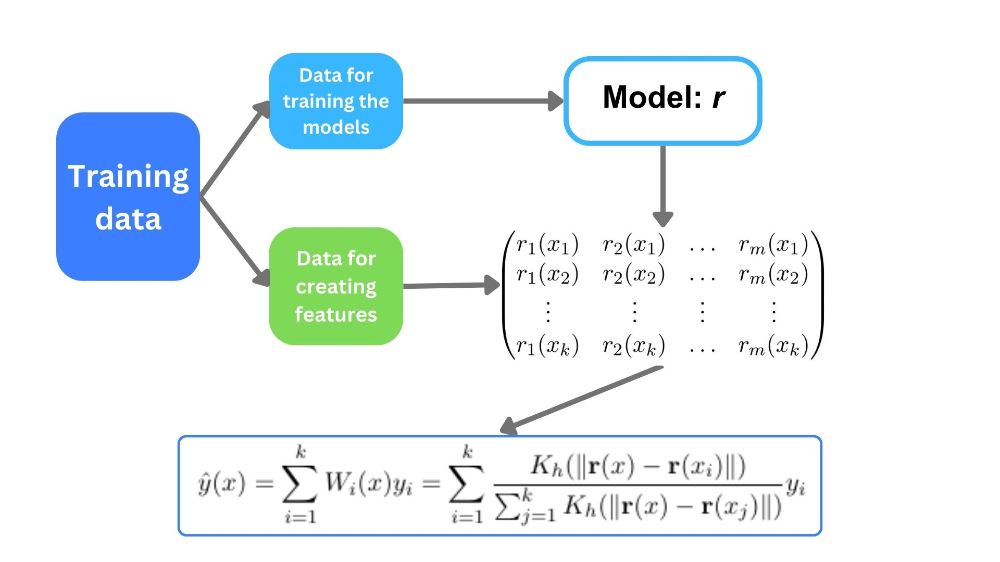

# Metric of error
from sklearn.metrics import mean_squared_error, mean_absolute_error, mean_absolute_percentage_error
# Plotting figures
import matplotlib.pyplot as plt
from matplotlib import cm
# Import class GradientCOBRA from the gradientcobra library
from gradientcobra.gradientcobra import GradientCOBRA
import seaborn as sns
sns.set()Introduction to GradientCOBRA method
GradientCOBRA is a consensual aggregation method that combines a given number of regressors based on their predicted features (Has, 2023). The method is summarized in the following figure.

where
- \({\bf r}(x)=(r_1(x),\dots, r_M(x))\) is the predicted features of observation \(x\).
- \(K:\mathbb{R}_+\to\mathbb{R}_+\) is a regular kernel function that converts the “closeness” between predicted features of observation \(x_i\) and \(x\) into the associated weight for the aggregation. For any smoothing parameter \(h>0\), \(K_h(t)=K(t/h)\).
Constructing a consensual aggregation method is equivalent to estimating an appropriate smoothing parameter \(h\) that minimizes the so-called \(\kappa\)-fold cross validation error:
\[\phi(h)=\frac{1}{\kappa}\sum_{j=1}^{\kappa}\sum_{(x_i,y_i)\in F_j}\ell(\hat{y}_{-F_j}(x_i),y_i)\]
where
- \(\ell\) is any regression loss function. By default, \(\ell(y_1,y_2)=(y_1-y_2)^2\).
- \((F_j)_{j=1,2,\dots,\kappa}\) are the \(\kappa\) folds of the second of the training data used for aggregation.
- \(\hat{y}_{-F_j}(x)\) is the prediction of \(x\) by aggregating predicted features on all folds \((F_k)_{k}\) except for \(F_j\).
GradientCOBRA method
class GradientCOBRA(random_state = None, learning_rate = 0.01, bandwidth_list = None, speed = ‘constant’, estimator_list = None, estimator_params = None, opt_method = “grad”, max_iter = int(300), opt_params = None, kernel = ‘radial’, kernel_exponent = 1.0, show_progress = True, loss_function = None, loss_weight = None, norm_constant = None):
Parameters
random_state: (default isNone) for setting the random state of all the random generators in the class. This allows the method to produce the same result when the samerandom_stateis used.learning_rate: (default is0.1) the learning rate in gradient descent algorithm for estimating the optimal bandwidth.bandwidth_list: a list of bandwidth parameters for grid search algorithm (default = np.linspace(0.00001, 10, 300)).speed: (default isconstant) for adjusting the speed of the learning rate. It is helpful when the cost function is flat around the optimal value, changing the learning speed might help the algorithm to converge faster. It should be an element of [‘constant’, ‘linear’, ‘log’, ‘sqrt_root’, ‘quad’, ‘exp’].estimator_list: (default is None) the list of intial estimators (machines as addressed in Biau et al. (2016)). If it isNone, the intial learners including ‘linear_regression’, ‘ridge’, ‘lasso’, ‘tree’, and ‘random_forest’ are used with their default parameters. This argument should be a sublist of the following list: [‘linear_regression’, ‘knn’, ‘ridge’, ‘lasso’, ‘tree’, ‘random_forest’, ‘svm’, ‘sgd’, ‘bayesian_ridge’, ‘adaboost’, ‘gradient_boost’].estimator_params: (default isNone) is a dictionary containing the parameters of the basic estimators given in theestimator_listargument. It must be a dictionary with:key: the name of the basic estimator defined inestimator_list,value: a dictionary with (key, value) = (parameter, value).
opt_method: (default is “grad”) is an optimization algorithm for estimating the bandwidth parameter. It should be either “grid” (grid search) or “grad” (gradient descent for non-compactly supported kernels).max_iter: (default =100) maximum iteration of gradient descent algorithm.opt_params: (default isNone) is a dictionary of additional parameters for the optimization algorithm (both grid search and gradient descent). Its should contain some of the following keys:- ‘epsilon’: stopping criterion for gradient descent algorithm (
default =\(10^{-6}\)). - ‘n_tries’: the number of tries for selecting initial position of gradient descent algorithm (
default = 10) - ‘start’: the initial value of the bandwidth parameter (
default = None) - ‘n_cv’: number of cross-validation folds (
default = 10) - ‘precision’ : the precision to estimate the gradient for gradient descent algorithm (
default =\(10^{-10}\)).
- ‘epsilon’: stopping criterion for gradient descent algorithm (
kernel: (default is'radial') the kernel function used for the aggregation. It should be an element of the list [‘exponential’, ‘gaussian’, ‘radial’, ‘cauchy’, ‘reverse_cosh’,‘epanechnikov’,‘biweight’, ‘triweight’, ‘triangular’, ‘cobra’, ‘naive’]. Some options such as'gaussian'and'radial'lead to the same radial kernel function. For'cobra'or'naive', they correspond to COBRA method by Biau et al. (2016).kernel_exponent: (default is1.0) is an exponential \(\alpha\) of the exponential and radial kernel function i.e., \(K(x) = \exp(|x|^{2\alpha})\). By default,alpha = 1.0.show_progress: (default isTrue) a boolean defining whether or not to show the progress of the optimization algorithm for both grid search and gradient descent.loss_function: (default isNone) a function or string defining the cost function to be optimized for estimating the optimal bandwidth parameter. By defalut, the K-Fold cross-validation MSE is used. Otherwise, it must be either:- a function of two argumetns (y_true, y_pred) or
- a string element of the list [‘mse’, ‘mae’, ‘mape’, ‘weighted_mse’]. If it is
weighted_mse, one can define the weight for each training point usingloss_weightargument below.loss_weight: (default isNone) a list of size \(n\) (number of training observations) defining the weight for each individual data point for the loss function. If it isNoneand theloss_function = weighted_mse, then a normalized weight \(W(i) = 1/\text{PDF}(i)\) is assigned to the individual \(i\) of the training data.
norm_constant: (default isNone) a normalized constant used to scale the features in optimization algorithm. By defalut, they are
Returns:
self: returns an instance of self containing the optimal estimated bandwidth and other results of the algorithm.
Methods:
fit: fitting the aggregation method on the design features (original data or predicted features).split_data: to split the data into \(D_k = \{(X_k,y_k)\}\) and \(D_{\ell} = \{(X_\ell,y_\ell)\}\) to train the basic estimators and perform aggregation respectively.build_basic_estimators: build basic estimators for the aggregation. It is also possible to set the values of (hyper)parameters for each estimators.load_predictions: to make predictions using the constructed basic estimators.distances: to construct distance matrix according to the kernel function used for the aggregation.kappa_cross_validation_error: the objective function to be minimized.optimize_bandwidth: the optimization method used to estimate the optimal bendwidth parameter.predict: for building prediction on the new observations using any given bendwidth or the estimated one.draw_learning_curve: for plotting the graphic of learning algorithm (error vs parameter).
Installation of the library from pypi
gradientcobra can be installed from pypi using pip:
pip install gradientcobra
Implementation of the method
Importing some packages
GradientCOBRA on simulated data
We simulate a regression data with \(1000\) observations and \(10\) inputs variables.
# For simulating dataset
from sklearn.datasets import make_regression
X1, y1 = make_regression(n_samples=1000, n_features=10, noise=2)Now, let’s randomly split the simulated data into \(80\%-20\%\) training-testing data.
from sklearn.model_selection import train_test_split
X_train1, X_test1, y_train1, y_test1 = train_test_split(X1, y1, test_size=0.2)
print('shape: x_train = {} , x_train = {} , y_train = {} , y_test = {}'.format(
X_train1.shape,
X_test1.shape,
y_train1.shape,
y_test1.shape))shape: x_train = (800, 10) , x_train = (200, 10) , y_train = (800,) , y_test = (200,)\(\bullet\) GradientCOBRA with default parameters
We create GradientCOBRA object called gc1 using GradientCOBRA class with the default parameters, then fit it to the training data.
gc1 = GradientCOBRA()
gc1_fit = gc1.fit(X_train1, y_train1)* GD progress: iter: 1 / bw: 3.000 / grad: -19.389 / stop criter: 1.000 : 0%| | 0/300 [00:00<?, ?it/s]* GD progress: iter: 1 / bw: 3.100 / grad: -19.389 / stop criter: 19.389 : 0%| | 0/300 [00:00<?, ?it/s]* GD progress: iter: 1 / bw: 3.100 / grad: -19.389 / stop criter: 19.389 : 0%| | 0/300 [00:00<?, ?it/s]* GD progress: iter: 2 / bw: 3.100 / grad: -19.389 / stop criter: 19.389 : 0%| | 0/300 [00:00<?, ?it/s]* GD progress: iter: 2 / bw: 3.100 / grad: -19.389 / stop criter: 19.389 : 0%| | 0/300 [00:00<?, ?it/s]* GD progress: iter: 3 / bw: 3.100 / grad: -19.389 / stop criter: 19.389 : 0%| | 0/300 [00:00<?, ?it/s]* GD progress: iter: 3 / bw: 3.100 / grad: -19.389 / stop criter: 19.389 : 0%| | 0/300 [00:00<?, ?it/s]* GD progress: iter: 4 / bw: 3.100 / grad: -19.389 / stop criter: 19.389 : 0%| | 0/300 [00:00<?, ?it/s]* GD progress: iter: 4 / bw: 3.100 / grad: -19.389 / stop criter: 19.389 : 0%| | 0/300 [00:00<?, ?it/s]* GD progress: iter: 5 / bw: 3.100 / grad: -84.857 / stop criter: 19.389 : 0%| | 0/300 [00:00<?, ?it/s]* GD progress: iter: 5 / bw: 3.100 / grad: -84.857 / stop criter: 19.389 : 0%| | 0/300 [00:00<?, ?it/s]* GD progress: iter: 6 / bw: 3.538 / grad: -12.805 / stop criter: 84.857 : 0%| | 0/300 [00:00<?, ?it/s]* GD progress: iter: 6 / bw: 3.538 / grad: -12.805 / stop criter: 84.857 : 0%| | 0/300 [00:00<?, ?it/s]* GD progress: iter: 7 / bw: 3.604 / grad: -17.871 / stop criter: 12.805 : 0%| | 0/300 [00:00<?, ?it/s]* GD progress: iter: 7 / bw: 3.604 / grad: -17.871 / stop criter: 12.805 : 0%| | 0/300 [00:00<?, ?it/s]* GD progress: iter: 8 / bw: 3.696 / grad: -20.533 / stop criter: 17.871 : 0%| | 0/300 [00:00<?, ?it/s]* GD progress: iter: 8 / bw: 3.696 / grad: -20.533 / stop criter: 17.871 : 0%| | 0/300 [00:00<?, ?it/s]* GD progress: iter: 9 / bw: 3.802 / grad: 29.665 / stop criter: 20.533 : 0%| | 0/300 [00:00<?, ?it/s] * GD progress: iter: 9 / bw: 3.802 / grad: 29.665 / stop criter: 20.533 : 0%| | 0/300 [00:00<?, ?it/s]* GD progress: iter: 10 / bw: 3.649 / grad: -42.539 / stop criter: 29.665 : 0%| | 0/300 [00:00<?, ?it/s]* GD progress: iter: 10 / bw: 3.649 / grad: -42.539 / stop criter: 29.665 : 0%| | 0/300 [00:00<?, ?it/s]* GD progress: iter: 11 / bw: 3.866 / grad: -15.752 / stop criter: 42.539 : 0%| | 0/300 [00:00<?, ?it/s]* GD progress: iter: 11 / bw: 3.866 / grad: -15.752 / stop criter: 42.539 : 0%| | 0/300 [00:00<?, ?it/s]* GD progress: iter: 12 / bw: 3.946 / grad: 91.348 / stop criter: 15.752 : 0%| | 0/300 [00:00<?, ?it/s] * GD progress: iter: 12 / bw: 3.946 / grad: 91.348 / stop criter: 15.752 : 0%| | 0/300 [00:00<?, ?it/s]* GD progress: iter: 12 / bw: 3.946 / grad: 91.348 / stop criter: 15.752 : 4%|▍ | 12/300 [00:00<00:02, 119.45it/s]* GD progress: iter: 13 / bw: 3.484 / grad: 27.631 / stop criter: 91.348 : 4%|▍ | 12/300 [00:00<00:02, 119.45it/s]* GD progress: iter: 13 / bw: 3.484 / grad: 27.631 / stop criter: 91.348 : 4%|▍ | 12/300 [00:00<00:02, 119.45it/s]* GD progress: iter: 14 / bw: 3.346 / grad: -77.736 / stop criter: 27.631 : 4%|▍ | 12/300 [00:00<00:02, 119.45it/s]* GD progress: iter: 14 / bw: 3.346 / grad: -77.736 / stop criter: 27.631 : 4%|▍ | 12/300 [00:00<00:02, 119.45it/s]* GD progress: iter: 15 / bw: 3.735 / grad: 45.085 / stop criter: 77.736 : 4%|▍ | 12/300 [00:00<00:02, 119.45it/s] * GD progress: iter: 15 / bw: 3.735 / grad: 45.085 / stop criter: 77.736 : 4%|▍ | 12/300 [00:00<00:02, 119.45it/s]* GD progress: iter: 16 / bw: 3.511 / grad: -38.421 / stop criter: 45.085 : 4%|▍ | 12/300 [00:00<00:02, 119.45it/s]* GD progress: iter: 16 / bw: 3.511 / grad: -38.421 / stop criter: 45.085 : 4%|▍ | 12/300 [00:00<00:02, 119.45it/s]* GD progress: iter: 17 / bw: 3.700 / grad: 16.647 / stop criter: 38.421 : 4%|▍ | 12/300 [00:00<00:02, 119.45it/s] * GD progress: iter: 17 / bw: 3.700 / grad: 16.647 / stop criter: 38.421 : 4%|▍ | 12/300 [00:00<00:02, 119.45it/s]* GD progress: iter: 18 / bw: 3.619 / grad: -48.544 / stop criter: 16.647 : 4%|▍ | 12/300 [00:00<00:02, 119.45it/s]* GD progress: iter: 18 / bw: 3.619 / grad: -48.544 / stop criter: 16.647 : 4%|▍ | 12/300 [00:00<00:02, 119.45it/s]* GD progress: iter: 19 / bw: 3.852 / grad: -83.813 / stop criter: 48.544 : 4%|▍ | 12/300 [00:00<00:02, 119.45it/s]* GD progress: iter: 19 / bw: 3.852 / grad: -83.813 / stop criter: 48.544 : 4%|▍ | 12/300 [00:00<00:02, 119.45it/s]* GD progress: iter: 20 / bw: 4.251 / grad: 71.178 / stop criter: 83.813 : 4%|▍ | 12/300 [00:00<00:02, 119.45it/s] * GD progress: iter: 20 / bw: 4.251 / grad: 71.178 / stop criter: 83.813 : 4%|▍ | 12/300 [00:00<00:02, 119.45it/s]* GD progress: iter: 21 / bw: 3.912 / grad: -19.918 / stop criter: 71.178 : 4%|▍ | 12/300 [00:00<00:02, 119.45it/s]* GD progress: iter: 21 / bw: 3.912 / grad: -19.918 / stop criter: 71.178 : 4%|▍ | 12/300 [00:00<00:02, 119.45it/s]* GD progress: iter: 22 / bw: 4.006 / grad: -31.498 / stop criter: 19.918 : 4%|▍ | 12/300 [00:00<00:02, 119.45it/s]* GD progress: iter: 22 / bw: 4.006 / grad: -31.498 / stop criter: 19.918 : 4%|▍ | 12/300 [00:00<00:02, 119.45it/s]* GD progress: iter: 23 / bw: 4.153 / grad: -8.174 / stop criter: 31.498 : 4%|▍ | 12/300 [00:00<00:02, 119.45it/s] * GD progress: iter: 23 / bw: 4.153 / grad: -8.174 / stop criter: 31.498 : 4%|▍ | 12/300 [00:00<00:02, 119.45it/s]* GD progress: iter: 24 / bw: 4.191 / grad: 49.798 / stop criter: 8.174 : 4%|▍ | 12/300 [00:00<00:02, 119.45it/s] * GD progress: iter: 24 / bw: 4.191 / grad: 49.798 / stop criter: 8.174 : 4%|▍ | 12/300 [00:00<00:02, 119.45it/s]* GD progress: iter: 25 / bw: 3.959 / grad: -4.718 / stop criter: 49.798 : 4%|▍ | 12/300 [00:00<00:02, 119.45it/s]* GD progress: iter: 25 / bw: 3.959 / grad: -4.718 / stop criter: 49.798 : 4%|▍ | 12/300 [00:00<00:02, 119.45it/s]* GD progress: iter: 25 / bw: 3.959 / grad: -4.718 / stop criter: 49.798 : 8%|▊ | 25/300 [00:00<00:02, 116.68it/s]* GD progress: iter: 26 / bw: 3.981 / grad: 32.786 / stop criter: 4.718 : 8%|▊ | 25/300 [00:00<00:02, 116.68it/s] * GD progress: iter: 26 / bw: 3.981 / grad: 32.786 / stop criter: 4.718 : 8%|▊ | 25/300 [00:00<00:02, 116.68it/s]* GD progress: iter: 27 / bw: 3.831 / grad: 6.176 / stop criter: 32.786 : 8%|▊ | 25/300 [00:00<00:02, 116.68it/s]* GD progress: iter: 27 / bw: 3.831 / grad: 6.176 / stop criter: 32.786 : 8%|▊ | 25/300 [00:00<00:02, 116.68it/s]* GD progress: iter: 28 / bw: 3.803 / grad: -17.235 / stop criter: 6.176 : 8%|▊ | 25/300 [00:00<00:02, 116.68it/s]* GD progress: iter: 28 / bw: 3.803 / grad: -17.235 / stop criter: 6.176 : 8%|▊ | 25/300 [00:00<00:02, 116.68it/s]* GD progress: iter: 29 / bw: 3.881 / grad: -54.019 / stop criter: 17.235 : 8%|▊ | 25/300 [00:00<00:02, 116.68it/s]* GD progress: iter: 29 / bw: 3.881 / grad: -54.019 / stop criter: 17.235 : 8%|▊ | 25/300 [00:00<00:02, 116.68it/s]* GD progress: iter: 30 / bw: 4.123 / grad: -51.531 / stop criter: 54.019 : 8%|▊ | 25/300 [00:00<00:02, 116.68it/s]* GD progress: iter: 30 / bw: 4.123 / grad: -51.531 / stop criter: 54.019 : 8%|▊ | 25/300 [00:00<00:02, 116.68it/s]* GD progress: iter: 31 / bw: 4.354 / grad: 71.170 / stop criter: 51.531 : 8%|▊ | 25/300 [00:00<00:02, 116.68it/s] * GD progress: iter: 31 / bw: 4.354 / grad: 71.170 / stop criter: 51.531 : 8%|▊ | 25/300 [00:00<00:02, 116.68it/s]* GD progress: iter: 32 / bw: 4.035 / grad: -101.614 / stop criter: 71.170 : 8%|▊ | 25/300 [00:00<00:02, 116.68it/s]* GD progress: iter: 32 / bw: 4.035 / grad: -101.614 / stop criter: 71.170 : 8%|▊ | 25/300 [00:00<00:02, 116.68it/s]* GD progress: iter: 33 / bw: 4.486 / grad: -57.542 / stop criter: 101.614 : 8%|▊ | 25/300 [00:00<00:02, 116.68it/s]* GD progress: iter: 33 / bw: 4.486 / grad: -57.542 / stop criter: 101.614 : 8%|▊ | 25/300 [00:00<00:02, 116.68it/s]* GD progress: iter: 34 / bw: 4.738 / grad: -30.312 / stop criter: 57.542 : 8%|▊ | 25/300 [00:00<00:02, 116.68it/s] * GD progress: iter: 34 / bw: 4.738 / grad: -30.312 / stop criter: 57.542 : 8%|▊ | 25/300 [00:00<00:02, 116.68it/s]* GD progress: iter: 35 / bw: 4.871 / grad: -27.846 / stop criter: 30.312 : 8%|▊ | 25/300 [00:00<00:02, 116.68it/s]* GD progress: iter: 35 / bw: 4.871 / grad: -27.846 / stop criter: 30.312 : 8%|▊ | 25/300 [00:00<00:02, 116.68it/s]* GD progress: iter: 36 / bw: 4.994 / grad: 21.438 / stop criter: 27.846 : 8%|▊ | 25/300 [00:00<00:02, 116.68it/s] * GD progress: iter: 36 / bw: 4.994 / grad: 21.438 / stop criter: 27.846 : 8%|▊ | 25/300 [00:00<00:02, 116.68it/s]* GD progress: iter: 37 / bw: 4.900 / grad: 28.704 / stop criter: 21.438 : 8%|▊ | 25/300 [00:00<00:02, 116.68it/s]* GD progress: iter: 37 / bw: 4.900 / grad: 28.704 / stop criter: 21.438 : 8%|▊ | 25/300 [00:00<00:02, 116.68it/s]* GD progress: iter: 38 / bw: 4.775 / grad: -67.847 / stop criter: 28.704 : 8%|▊ | 25/300 [00:00<00:02, 116.68it/s]* GD progress: iter: 38 / bw: 4.775 / grad: -67.847 / stop criter: 28.704 : 8%|▊ | 25/300 [00:00<00:02, 116.68it/s]* GD progress: iter: 38 / bw: 4.775 / grad: -67.847 / stop criter: 28.704 : 13%|█▎ | 38/300 [00:00<00:02, 120.72it/s]* GD progress: iter: 39 / bw: 5.070 / grad: 77.576 / stop criter: 67.847 : 13%|█▎ | 38/300 [00:00<00:02, 120.72it/s] * GD progress: iter: 39 / bw: 5.070 / grad: 77.576 / stop criter: 67.847 : 13%|█▎ | 38/300 [00:00<00:02, 120.72it/s]* GD progress: iter: 40 / bw: 4.736 / grad: -57.038 / stop criter: 77.576 : 13%|█▎ | 38/300 [00:00<00:02, 120.72it/s]* GD progress: iter: 40 / bw: 4.736 / grad: -57.038 / stop criter: 77.576 : 13%|█▎ | 38/300 [00:00<00:02, 120.72it/s]* GD progress: iter: 41 / bw: 4.979 / grad: 26.584 / stop criter: 57.038 : 13%|█▎ | 38/300 [00:00<00:02, 120.72it/s] * GD progress: iter: 41 / bw: 4.979 / grad: 26.584 / stop criter: 57.038 : 13%|█▎ | 38/300 [00:00<00:02, 120.72it/s]* GD progress: iter: 42 / bw: 4.867 / grad: -29.853 / stop criter: 26.584 : 13%|█▎ | 38/300 [00:00<00:02, 120.72it/s]* GD progress: iter: 42 / bw: 4.867 / grad: -29.853 / stop criter: 26.584 : 13%|█▎ | 38/300 [00:00<00:02, 120.72it/s]* GD progress: iter: 43 / bw: 4.991 / grad: -34.202 / stop criter: 29.853 : 13%|█▎ | 38/300 [00:00<00:02, 120.72it/s]* GD progress: iter: 43 / bw: 4.991 / grad: -34.202 / stop criter: 29.853 : 13%|█▎ | 38/300 [00:00<00:02, 120.72it/s]* GD progress: iter: 44 / bw: 5.133 / grad: 22.736 / stop criter: 34.202 : 13%|█▎ | 38/300 [00:00<00:02, 120.72it/s] * GD progress: iter: 44 / bw: 5.133 / grad: 22.736 / stop criter: 34.202 : 13%|█▎ | 38/300 [00:00<00:02, 120.72it/s]* GD progress: iter: 45 / bw: 5.039 / grad: 70.580 / stop criter: 22.736 : 13%|█▎ | 38/300 [00:00<00:02, 120.72it/s]* GD progress: iter: 45 / bw: 5.039 / grad: 70.580 / stop criter: 22.736 : 13%|█▎ | 38/300 [00:00<00:02, 120.72it/s]* GD progress: iter: 46 / bw: 4.750 / grad: -9.699 / stop criter: 70.580 : 13%|█▎ | 38/300 [00:00<00:02, 120.72it/s]* GD progress: iter: 46 / bw: 4.750 / grad: -9.699 / stop criter: 70.580 : 13%|█▎ | 38/300 [00:00<00:02, 120.72it/s]* GD progress: iter: 47 / bw: 4.790 / grad: -47.634 / stop criter: 9.699 : 13%|█▎ | 38/300 [00:00<00:02, 120.72it/s]* GD progress: iter: 47 / bw: 4.790 / grad: -47.634 / stop criter: 9.699 : 13%|█▎ | 38/300 [00:00<00:02, 120.72it/s]* GD progress: iter: 48 / bw: 4.983 / grad: 71.020 / stop criter: 47.634 : 13%|█▎ | 38/300 [00:00<00:02, 120.72it/s]* GD progress: iter: 48 / bw: 4.983 / grad: 71.020 / stop criter: 47.634 : 13%|█▎ | 38/300 [00:00<00:02, 120.72it/s]* GD progress: iter: 49 / bw: 4.695 / grad: -20.859 / stop criter: 71.020 : 13%|█▎ | 38/300 [00:00<00:02, 120.72it/s]* GD progress: iter: 49 / bw: 4.695 / grad: -20.859 / stop criter: 71.020 : 13%|█▎ | 38/300 [00:00<00:02, 120.72it/s]* GD progress: iter: 50 / bw: 4.779 / grad: 23.949 / stop criter: 20.859 : 13%|█▎ | 38/300 [00:00<00:02, 120.72it/s] * GD progress: iter: 50 / bw: 4.779 / grad: 23.949 / stop criter: 20.859 : 13%|█▎ | 38/300 [00:00<00:02, 120.72it/s]* GD progress: iter: 51 / bw: 4.683 / grad: -26.081 / stop criter: 23.949 : 13%|█▎ | 38/300 [00:00<00:02, 120.72it/s]* GD progress: iter: 51 / bw: 4.683 / grad: -26.081 / stop criter: 23.949 : 13%|█▎ | 38/300 [00:00<00:02, 120.72it/s]* GD progress: iter: 51 / bw: 4.683 / grad: -26.081 / stop criter: 23.949 : 17%|█▋ | 51/300 [00:00<00:02, 124.00it/s]* GD progress: iter: 52 / bw: 4.786 / grad: -18.979 / stop criter: 26.081 : 17%|█▋ | 51/300 [00:00<00:02, 124.00it/s]* GD progress: iter: 52 / bw: 4.786 / grad: -18.979 / stop criter: 26.081 : 17%|█▋ | 51/300 [00:00<00:02, 124.00it/s]* GD progress: iter: 53 / bw: 4.860 / grad: 18.048 / stop criter: 18.979 : 17%|█▋ | 51/300 [00:00<00:02, 124.00it/s] * GD progress: iter: 53 / bw: 4.860 / grad: 18.048 / stop criter: 18.979 : 17%|█▋ | 51/300 [00:00<00:02, 124.00it/s]* GD progress: iter: 54 / bw: 4.790 / grad: -17.989 / stop criter: 18.048 : 17%|█▋ | 51/300 [00:00<00:02, 124.00it/s]* GD progress: iter: 54 / bw: 4.790 / grad: -17.989 / stop criter: 18.048 : 17%|█▋ | 51/300 [00:00<00:02, 124.00it/s]* GD progress: iter: 55 / bw: 4.859 / grad: 23.301 / stop criter: 17.989 : 17%|█▋ | 51/300 [00:00<00:02, 124.00it/s] * GD progress: iter: 55 / bw: 4.859 / grad: 23.301 / stop criter: 17.989 : 17%|█▋ | 51/300 [00:00<00:02, 124.00it/s]* GD progress: iter: 56 / bw: 4.770 / grad: 8.084 / stop criter: 23.301 : 17%|█▋ | 51/300 [00:00<00:02, 124.00it/s] * GD progress: iter: 56 / bw: 4.770 / grad: 8.084 / stop criter: 23.301 : 17%|█▋ | 51/300 [00:00<00:02, 124.00it/s]* GD progress: iter: 57 / bw: 4.740 / grad: 34.426 / stop criter: 8.084 : 17%|█▋ | 51/300 [00:00<00:02, 124.00it/s]* GD progress: iter: 57 / bw: 4.740 / grad: 34.426 / stop criter: 8.084 : 17%|█▋ | 51/300 [00:00<00:02, 124.00it/s]* GD progress: iter: 58 / bw: 4.610 / grad: -30.742 / stop criter: 34.426 : 17%|█▋ | 51/300 [00:00<00:02, 124.00it/s]* GD progress: iter: 58 / bw: 4.610 / grad: -30.742 / stop criter: 34.426 : 17%|█▋ | 51/300 [00:00<00:02, 124.00it/s]* GD progress: iter: 59 / bw: 4.726 / grad: 82.251 / stop criter: 30.742 : 17%|█▋ | 51/300 [00:00<00:02, 124.00it/s] * GD progress: iter: 59 / bw: 4.726 / grad: 82.251 / stop criter: 30.742 : 17%|█▋ | 51/300 [00:00<00:02, 124.00it/s]* GD progress: iter: 60 / bw: 4.418 / grad: 33.820 / stop criter: 82.251 : 17%|█▋ | 51/300 [00:00<00:02, 124.00it/s]* GD progress: iter: 60 / bw: 4.418 / grad: 33.820 / stop criter: 82.251 : 17%|█▋ | 51/300 [00:00<00:02, 124.00it/s]* GD progress: iter: 61 / bw: 4.293 / grad: -107.551 / stop criter: 33.820 : 17%|█▋ | 51/300 [00:00<00:02, 124.00it/s]* GD progress: iter: 61 / bw: 4.293 / grad: -107.551 / stop criter: 33.820 : 17%|█▋ | 51/300 [00:00<00:02, 124.00it/s]* GD progress: iter: 62 / bw: 4.691 / grad: -65.953 / stop criter: 107.551 : 17%|█▋ | 51/300 [00:00<00:02, 124.00it/s]* GD progress: iter: 62 / bw: 4.691 / grad: -65.953 / stop criter: 107.551 : 17%|█▋ | 51/300 [00:00<00:02, 124.00it/s]* GD progress: iter: 63 / bw: 4.933 / grad: 20.592 / stop criter: 65.953 : 17%|█▋ | 51/300 [00:00<00:02, 124.00it/s] * GD progress: iter: 63 / bw: 4.933 / grad: 20.592 / stop criter: 65.953 : 17%|█▋ | 51/300 [00:00<00:02, 124.00it/s]* GD progress: iter: 64 / bw: 4.857 / grad: -73.346 / stop criter: 20.592 : 17%|█▋ | 51/300 [00:00<00:02, 124.00it/s]* GD progress: iter: 64 / bw: 4.857 / grad: -73.346 / stop criter: 20.592 : 17%|█▋ | 51/300 [00:00<00:02, 124.00it/s]* GD progress: iter: 65 / bw: 5.123 / grad: 71.437 / stop criter: 73.346 : 17%|█▋ | 51/300 [00:00<00:02, 124.00it/s] * GD progress: iter: 65 / bw: 5.123 / grad: 71.437 / stop criter: 73.346 : 17%|█▋ | 51/300 [00:00<00:02, 124.00it/s]* GD progress: iter: 65 / bw: 5.123 / grad: 71.437 / stop criter: 73.346 : 22%|██▏ | 65/300 [00:00<00:01, 127.14it/s]* GD progress: iter: 66 / bw: 4.867 / grad: 55.946 / stop criter: 71.437 : 22%|██▏ | 65/300 [00:00<00:01, 127.14it/s]* GD progress: iter: 66 / bw: 4.867 / grad: 55.946 / stop criter: 71.437 : 22%|██▏ | 65/300 [00:00<00:01, 127.14it/s]* GD progress: iter: 67 / bw: 4.668 / grad: 32.531 / stop criter: 55.946 : 22%|██▏ | 65/300 [00:00<00:01, 127.14it/s]* GD progress: iter: 67 / bw: 4.668 / grad: 32.531 / stop criter: 55.946 : 22%|██▏ | 65/300 [00:00<00:01, 127.14it/s]* GD progress: iter: 68 / bw: 4.552 / grad: -27.696 / stop criter: 32.531 : 22%|██▏ | 65/300 [00:00<00:01, 127.14it/s]* GD progress: iter: 68 / bw: 4.552 / grad: -27.696 / stop criter: 32.531 : 22%|██▏ | 65/300 [00:00<00:01, 127.14it/s]* GD progress: iter: 69 / bw: 4.651 / grad: -5.087 / stop criter: 27.696 : 22%|██▏ | 65/300 [00:00<00:01, 127.14it/s] * GD progress: iter: 69 / bw: 4.651 / grad: -5.087 / stop criter: 27.696 : 22%|██▏ | 65/300 [00:00<00:01, 127.14it/s]* GD progress: iter: 70 / bw: 4.669 / grad: -18.382 / stop criter: 5.087 : 22%|██▏ | 65/300 [00:00<00:01, 127.14it/s]* GD progress: iter: 70 / bw: 4.669 / grad: -18.382 / stop criter: 5.087 : 22%|██▏ | 65/300 [00:00<00:01, 127.14it/s]* GD progress: iter: 71 / bw: 4.733 / grad: 50.621 / stop criter: 18.382 : 22%|██▏ | 65/300 [00:00<00:01, 127.14it/s]* GD progress: iter: 71 / bw: 4.733 / grad: 50.621 / stop criter: 18.382 : 22%|██▏ | 65/300 [00:00<00:01, 127.14it/s]* GD progress: iter: 72 / bw: 4.555 / grad: 52.692 / stop criter: 50.621 : 22%|██▏ | 65/300 [00:00<00:01, 127.14it/s]* GD progress: iter: 72 / bw: 4.555 / grad: 52.692 / stop criter: 50.621 : 22%|██▏ | 65/300 [00:00<00:01, 127.14it/s]* GD progress: iter: 73 / bw: 4.371 / grad: -7.684 / stop criter: 52.692 : 22%|██▏ | 65/300 [00:00<00:01, 127.14it/s]* GD progress: iter: 73 / bw: 4.371 / grad: -7.684 / stop criter: 52.692 : 22%|██▏ | 65/300 [00:00<00:01, 127.14it/s]* GD progress: iter: 74 / bw: 4.398 / grad: 5.758 / stop criter: 7.684 : 22%|██▏ | 65/300 [00:00<00:01, 127.14it/s] * GD progress: iter: 74 / bw: 4.398 / grad: 5.758 / stop criter: 7.684 : 22%|██▏ | 65/300 [00:00<00:01, 127.14it/s]* GD progress: iter: 75 / bw: 4.378 / grad: -34.029 / stop criter: 5.758 : 22%|██▏ | 65/300 [00:00<00:01, 127.14it/s]* GD progress: iter: 75 / bw: 4.378 / grad: -34.029 / stop criter: 5.758 : 22%|██▏ | 65/300 [00:00<00:01, 127.14it/s]* GD progress: iter: 76 / bw: 4.495 / grad: -11.710 / stop criter: 34.029 : 22%|██▏ | 65/300 [00:00<00:01, 127.14it/s]* GD progress: iter: 76 / bw: 4.495 / grad: -11.710 / stop criter: 34.029 : 22%|██▏ | 65/300 [00:00<00:01, 127.14it/s]* GD progress: iter: 77 / bw: 4.534 / grad: -18.298 / stop criter: 11.710 : 22%|██▏ | 65/300 [00:00<00:01, 127.14it/s]* GD progress: iter: 77 / bw: 4.534 / grad: -18.298 / stop criter: 11.710 : 22%|██▏ | 65/300 [00:00<00:01, 127.14it/s]* GD progress: iter: 78 / bw: 4.596 / grad: 53.685 / stop criter: 18.298 : 22%|██▏ | 65/300 [00:00<00:01, 127.14it/s] * GD progress: iter: 78 / bw: 4.596 / grad: 53.685 / stop criter: 18.298 : 22%|██▏ | 65/300 [00:00<00:01, 127.14it/s]* GD progress: iter: 79 / bw: 4.415 / grad: -10.848 / stop criter: 53.685 : 22%|██▏ | 65/300 [00:00<00:01, 127.14it/s]* GD progress: iter: 79 / bw: 4.415 / grad: -10.848 / stop criter: 53.685 : 22%|██▏ | 65/300 [00:00<00:01, 127.14it/s]* GD progress: iter: 79 / bw: 4.415 / grad: -10.848 / stop criter: 53.685 : 26%|██▋ | 79/300 [00:00<00:01, 126.96it/s]* GD progress: iter: 80 / bw: 4.451 / grad: 33.412 / stop criter: 10.848 : 26%|██▋ | 79/300 [00:00<00:01, 126.96it/s] * GD progress: iter: 80 / bw: 4.451 / grad: 33.412 / stop criter: 10.848 : 26%|██▋ | 79/300 [00:00<00:01, 126.96it/s]* GD progress: iter: 81 / bw: 4.340 / grad: 7.450 / stop criter: 33.412 : 26%|██▋ | 79/300 [00:00<00:01, 126.96it/s] * GD progress: iter: 81 / bw: 4.340 / grad: 7.450 / stop criter: 33.412 : 26%|██▋ | 79/300 [00:00<00:01, 126.96it/s]* GD progress: iter: 82 / bw: 4.316 / grad: 27.246 / stop criter: 7.450 : 26%|██▋ | 79/300 [00:00<00:01, 126.96it/s]* GD progress: iter: 82 / bw: 4.316 / grad: 27.246 / stop criter: 7.450 : 26%|██▋ | 79/300 [00:00<00:01, 126.96it/s]* GD progress: iter: 83 / bw: 4.226 / grad: -22.078 / stop criter: 27.246 : 26%|██▋ | 79/300 [00:00<00:01, 126.96it/s]* GD progress: iter: 83 / bw: 4.226 / grad: -22.078 / stop criter: 27.246 : 26%|██▋ | 79/300 [00:00<00:01, 126.96it/s]* GD progress: iter: 84 / bw: 4.299 / grad: 39.908 / stop criter: 22.078 : 26%|██▋ | 79/300 [00:00<00:01, 126.96it/s] * GD progress: iter: 84 / bw: 4.299 / grad: 39.908 / stop criter: 22.078 : 26%|██▋ | 79/300 [00:00<00:01, 126.96it/s]* GD progress: iter: 85 / bw: 4.169 / grad: 45.877 / stop criter: 39.908 : 26%|██▋ | 79/300 [00:00<00:01, 126.96it/s]* GD progress: iter: 85 / bw: 4.169 / grad: 45.877 / stop criter: 39.908 : 26%|██▋ | 79/300 [00:00<00:01, 126.96it/s]* GD progress: iter: 86 / bw: 4.022 / grad: 51.440 / stop criter: 45.877 : 26%|██▋ | 79/300 [00:00<00:01, 126.96it/s]* GD progress: iter: 86 / bw: 4.022 / grad: 51.440 / stop criter: 45.877 : 26%|██▋ | 79/300 [00:00<00:01, 126.96it/s]* GD progress: iter: 87 / bw: 3.856 / grad: -86.935 / stop criter: 51.440 : 26%|██▋ | 79/300 [00:00<00:01, 126.96it/s]* GD progress: iter: 87 / bw: 3.856 / grad: -86.935 / stop criter: 51.440 : 26%|██▋ | 79/300 [00:00<00:01, 126.96it/s]* GD progress: iter: 88 / bw: 4.136 / grad: -51.301 / stop criter: 86.935 : 26%|██▋ | 79/300 [00:00<00:01, 126.96it/s]* GD progress: iter: 88 / bw: 4.136 / grad: -51.301 / stop criter: 86.935 : 26%|██▋ | 79/300 [00:00<00:01, 126.96it/s]* GD progress: iter: 89 / bw: 4.299 / grad: -11.606 / stop criter: 51.301 : 26%|██▋ | 79/300 [00:00<00:01, 126.96it/s]* GD progress: iter: 89 / bw: 4.299 / grad: -11.606 / stop criter: 51.301 : 26%|██▋ | 79/300 [00:00<00:01, 126.96it/s]* GD progress: iter: 90 / bw: 4.336 / grad: -67.186 / stop criter: 11.606 : 26%|██▋ | 79/300 [00:00<00:01, 126.96it/s]* GD progress: iter: 90 / bw: 4.336 / grad: -67.186 / stop criter: 11.606 : 26%|██▋ | 79/300 [00:00<00:01, 126.96it/s]* GD progress: iter: 91 / bw: 4.550 / grad: -52.527 / stop criter: 67.186 : 26%|██▋ | 79/300 [00:00<00:01, 126.96it/s]* GD progress: iter: 91 / bw: 4.550 / grad: -52.527 / stop criter: 67.186 : 26%|██▋ | 79/300 [00:00<00:01, 126.96it/s]* GD progress: iter: 92 / bw: 4.717 / grad: -11.675 / stop criter: 52.527 : 26%|██▋ | 79/300 [00:00<00:01, 126.96it/s]* GD progress: iter: 92 / bw: 4.717 / grad: -11.675 / stop criter: 52.527 : 26%|██▋ | 79/300 [00:00<00:01, 126.96it/s]* GD progress: iter: 92 / bw: 4.717 / grad: -11.675 / stop criter: 52.527 : 31%|███ | 92/300 [00:00<00:01, 127.87it/s]* GD progress: iter: 93 / bw: 4.754 / grad: 28.206 / stop criter: 11.675 : 31%|███ | 92/300 [00:00<00:01, 127.87it/s] * GD progress: iter: 93 / bw: 4.754 / grad: 28.206 / stop criter: 11.675 : 31%|███ | 92/300 [00:00<00:01, 127.87it/s]* GD progress: iter: 94 / bw: 4.664 / grad: -86.511 / stop criter: 28.206 : 31%|███ | 92/300 [00:00<00:01, 127.87it/s]* GD progress: iter: 94 / bw: 4.664 / grad: -86.511 / stop criter: 28.206 : 31%|███ | 92/300 [00:00<00:01, 127.87it/s]* GD progress: iter: 95 / bw: 4.937 / grad: -23.748 / stop criter: 86.511 : 31%|███ | 92/300 [00:00<00:01, 127.87it/s]* GD progress: iter: 95 / bw: 4.937 / grad: -23.748 / stop criter: 86.511 : 31%|███ | 92/300 [00:00<00:01, 127.87it/s]* GD progress: iter: 96 / bw: 5.011 / grad: -9.064 / stop criter: 23.748 : 31%|███ | 92/300 [00:00<00:01, 127.87it/s] * GD progress: iter: 96 / bw: 5.011 / grad: -9.064 / stop criter: 23.748 : 31%|███ | 92/300 [00:00<00:01, 127.87it/s]* GD progress: iter: 97 / bw: 5.039 / grad: 0.156 / stop criter: 9.064 : 31%|███ | 92/300 [00:00<00:01, 127.87it/s] * GD progress: iter: 97 / bw: 5.039 / grad: 0.156 / stop criter: 9.064 : 31%|███ | 92/300 [00:00<00:01, 127.87it/s]* GD progress: iter: 98 / bw: 5.039 / grad: -96.447 / stop criter: 0.156 : 31%|███ | 92/300 [00:00<00:01, 127.87it/s]* GD progress: iter: 98 / bw: 5.039 / grad: -96.447 / stop criter: 0.156 : 31%|███ | 92/300 [00:00<00:01, 127.87it/s]* GD progress: iter: 99 / bw: 5.337 / grad: -64.783 / stop criter: 96.447 : 31%|███ | 92/300 [00:00<00:01, 127.87it/s]* GD progress: iter: 99 / bw: 5.337 / grad: -64.783 / stop criter: 96.447 : 31%|███ | 92/300 [00:00<00:01, 127.87it/s]* GD progress: iter: 100 / bw: 5.535 / grad: -6.210 / stop criter: 64.783 : 31%|███ | 92/300 [00:00<00:01, 127.87it/s]* GD progress: iter: 100 / bw: 5.535 / grad: -6.210 / stop criter: 64.783 : 31%|███ | 92/300 [00:00<00:01, 127.87it/s]* GD progress: iter: 101 / bw: 5.554 / grad: -61.093 / stop criter: 6.210 : 31%|███ | 92/300 [00:00<00:01, 127.87it/s]* GD progress: iter: 101 / bw: 5.554 / grad: -61.093 / stop criter: 6.210 : 31%|███ | 92/300 [00:00<00:01, 127.87it/s]* GD progress: iter: 102 / bw: 5.741 / grad: 168.090 / stop criter: 61.093 : 31%|███ | 92/300 [00:00<00:01, 127.87it/s]* GD progress: iter: 102 / bw: 5.741 / grad: 168.090 / stop criter: 61.093 : 31%|███ | 92/300 [00:00<00:01, 127.87it/s]* GD progress: iter: 103 / bw: 5.227 / grad: 57.859 / stop criter: 168.090 : 31%|███ | 92/300 [00:00<00:01, 127.87it/s]* GD progress: iter: 103 / bw: 5.227 / grad: 57.859 / stop criter: 168.090 : 31%|███ | 92/300 [00:00<00:01, 127.87it/s]* GD progress: iter: 104 / bw: 5.052 / grad: -46.318 / stop criter: 57.859 : 31%|███ | 92/300 [00:00<00:01, 127.87it/s]* GD progress: iter: 104 / bw: 5.052 / grad: -46.318 / stop criter: 57.859 : 31%|███ | 92/300 [00:00<00:01, 127.87it/s]* GD progress: iter: 105 / bw: 5.192 / grad: 86.578 / stop criter: 46.318 : 31%|███ | 92/300 [00:00<00:01, 127.87it/s] * GD progress: iter: 105 / bw: 5.192 / grad: 86.578 / stop criter: 46.318 : 31%|███ | 92/300 [00:00<00:01, 127.87it/s]* GD progress: iter: 106 / bw: 4.932 / grad: -25.160 / stop criter: 86.578 : 31%|███ | 92/300 [00:00<00:01, 127.87it/s]* GD progress: iter: 106 / bw: 4.932 / grad: -25.160 / stop criter: 86.578 : 31%|███ | 92/300 [00:00<00:01, 127.87it/s]* GD progress: iter: 106 / bw: 4.932 / grad: -25.160 / stop criter: 86.578 : 35%|███▌ | 106/300 [00:00<00:01, 129.08it/s]* GD progress: iter: 107 / bw: 5.007 / grad: -53.665 / stop criter: 25.160 : 35%|███▌ | 106/300 [00:00<00:01, 129.08it/s]* GD progress: iter: 107 / bw: 5.007 / grad: -53.665 / stop criter: 25.160 : 35%|███▌ | 106/300 [00:00<00:01, 129.08it/s]* GD progress: iter: 108 / bw: 5.165 / grad: 6.658 / stop criter: 53.665 : 35%|███▌ | 106/300 [00:00<00:01, 129.08it/s] * GD progress: iter: 108 / bw: 5.165 / grad: 6.658 / stop criter: 53.665 : 35%|███▌ | 106/300 [00:00<00:01, 129.08it/s]* GD progress: iter: 109 / bw: 5.145 / grad: 80.569 / stop criter: 6.658 : 35%|███▌ | 106/300 [00:00<00:01, 129.08it/s]* GD progress: iter: 109 / bw: 5.145 / grad: 80.569 / stop criter: 6.658 : 35%|███▌ | 106/300 [00:00<00:01, 129.08it/s]* GD progress: iter: 110 / bw: 4.911 / grad: -36.359 / stop criter: 80.569 : 35%|███▌ | 106/300 [00:00<00:01, 129.08it/s]* GD progress: iter: 110 / bw: 4.911 / grad: -36.359 / stop criter: 80.569 : 35%|███▌ | 106/300 [00:00<00:01, 129.08it/s]* GD progress: iter: 111 / bw: 5.017 / grad: -68.066 / stop criter: 36.359 : 35%|███▌ | 106/300 [00:00<00:01, 129.08it/s]* GD progress: iter: 111 / bw: 5.017 / grad: -68.066 / stop criter: 36.359 : 35%|███▌ | 106/300 [00:00<00:01, 129.08it/s]* GD progress: iter: 112 / bw: 5.213 / grad: 30.848 / stop criter: 68.066 : 35%|███▌ | 106/300 [00:00<00:01, 129.08it/s] * GD progress: iter: 112 / bw: 5.213 / grad: 30.848 / stop criter: 68.066 : 35%|███▌ | 106/300 [00:00<00:01, 129.08it/s]* GD progress: iter: 113 / bw: 5.124 / grad: -54.862 / stop criter: 30.848 : 35%|███▌ | 106/300 [00:00<00:01, 129.08it/s]* GD progress: iter: 113 / bw: 5.124 / grad: -54.862 / stop criter: 30.848 : 35%|███▌ | 106/300 [00:00<00:01, 129.08it/s]* GD progress: iter: 114 / bw: 5.280 / grad: -12.416 / stop criter: 54.862 : 35%|███▌ | 106/300 [00:00<00:01, 129.08it/s]* GD progress: iter: 114 / bw: 5.280 / grad: -12.416 / stop criter: 54.862 : 35%|███▌ | 106/300 [00:00<00:01, 129.08it/s]* GD progress: iter: 115 / bw: 5.315 / grad: -44.309 / stop criter: 12.416 : 35%|███▌ | 106/300 [00:00<00:01, 129.08it/s]* GD progress: iter: 115 / bw: 5.315 / grad: -44.309 / stop criter: 12.416 : 35%|███▌ | 106/300 [00:00<00:01, 129.08it/s]* GD progress: iter: 116 / bw: 5.440 / grad: -33.260 / stop criter: 44.309 : 35%|███▌ | 106/300 [00:00<00:01, 129.08it/s]* GD progress: iter: 116 / bw: 5.440 / grad: -33.260 / stop criter: 44.309 : 35%|███▌ | 106/300 [00:00<00:01, 129.08it/s]* GD progress: iter: 117 / bw: 5.534 / grad: 51.751 / stop criter: 33.260 : 35%|███▌ | 106/300 [00:00<00:01, 129.08it/s] * GD progress: iter: 117 / bw: 5.534 / grad: 51.751 / stop criter: 33.260 : 35%|███▌ | 106/300 [00:00<00:01, 129.08it/s]* GD progress: iter: 118 / bw: 5.388 / grad: -25.853 / stop criter: 51.751 : 35%|███▌ | 106/300 [00:00<00:01, 129.08it/s]* GD progress: iter: 118 / bw: 5.388 / grad: -25.853 / stop criter: 51.751 : 35%|███▌ | 106/300 [00:00<00:01, 129.08it/s]* GD progress: iter: 119 / bw: 5.460 / grad: -6.615 / stop criter: 25.853 : 35%|███▌ | 106/300 [00:00<00:01, 129.08it/s] * GD progress: iter: 119 / bw: 5.460 / grad: -6.615 / stop criter: 25.853 : 35%|███▌ | 106/300 [00:00<00:01, 129.08it/s]* GD progress: iter: 119 / bw: 5.460 / grad: -6.615 / stop criter: 25.853 : 40%|███▉ | 119/300 [00:00<00:01, 113.69it/s]* GD progress: iter: 120 / bw: 5.479 / grad: 80.664 / stop criter: 6.615 : 40%|███▉ | 119/300 [00:00<00:01, 113.69it/s] * GD progress: iter: 120 / bw: 5.479 / grad: 80.664 / stop criter: 6.615 : 40%|███▉ | 119/300 [00:00<00:01, 113.69it/s]* GD progress: iter: 121 / bw: 5.255 / grad: -34.412 / stop criter: 80.664 : 40%|███▉ | 119/300 [00:01<00:01, 113.69it/s]* GD progress: iter: 121 / bw: 5.255 / grad: -34.412 / stop criter: 80.664 : 40%|███▉ | 119/300 [00:01<00:01, 113.69it/s]* GD progress: iter: 122 / bw: 5.350 / grad: -9.138 / stop criter: 34.412 : 40%|███▉ | 119/300 [00:01<00:01, 113.69it/s] * GD progress: iter: 122 / bw: 5.350 / grad: -9.138 / stop criter: 34.412 : 40%|███▉ | 119/300 [00:01<00:01, 113.69it/s]* GD progress: iter: 123 / bw: 5.374 / grad: -91.120 / stop criter: 9.138 : 40%|███▉ | 119/300 [00:01<00:01, 113.69it/s]* GD progress: iter: 123 / bw: 5.374 / grad: -91.120 / stop criter: 9.138 : 40%|███▉ | 119/300 [00:01<00:01, 113.69it/s]* GD progress: iter: 124 / bw: 5.621 / grad: -42.187 / stop criter: 91.120 : 40%|███▉ | 119/300 [00:01<00:01, 113.69it/s]* GD progress: iter: 124 / bw: 5.621 / grad: -42.187 / stop criter: 91.120 : 40%|███▉ | 119/300 [00:01<00:01, 113.69it/s]* GD progress: iter: 125 / bw: 5.736 / grad: 24.687 / stop criter: 42.187 : 40%|███▉ | 119/300 [00:01<00:01, 113.69it/s] * GD progress: iter: 125 / bw: 5.736 / grad: 24.687 / stop criter: 42.187 : 40%|███▉ | 119/300 [00:01<00:01, 113.69it/s]* GD progress: iter: 126 / bw: 5.669 / grad: 63.083 / stop criter: 24.687 : 40%|███▉ | 119/300 [00:01<00:01, 113.69it/s]* GD progress: iter: 126 / bw: 5.669 / grad: 63.083 / stop criter: 24.687 : 40%|███▉ | 119/300 [00:01<00:01, 113.69it/s]* GD progress: iter: 127 / bw: 5.500 / grad: 80.459 / stop criter: 63.083 : 40%|███▉ | 119/300 [00:01<00:01, 113.69it/s]* GD progress: iter: 127 / bw: 5.500 / grad: 80.459 / stop criter: 63.083 : 40%|███▉ | 119/300 [00:01<00:01, 113.69it/s]* GD progress: iter: 128 / bw: 5.284 / grad: 13.017 / stop criter: 80.459 : 40%|███▉ | 119/300 [00:01<00:01, 113.69it/s]* GD progress: iter: 128 / bw: 5.284 / grad: 13.017 / stop criter: 80.459 : 40%|███▉ | 119/300 [00:01<00:01, 113.69it/s]* GD progress: iter: 129 / bw: 5.249 / grad: 16.161 / stop criter: 13.017 : 40%|███▉ | 119/300 [00:01<00:01, 113.69it/s]* GD progress: iter: 129 / bw: 5.249 / grad: 16.161 / stop criter: 13.017 : 40%|███▉ | 119/300 [00:01<00:01, 113.69it/s]* GD progress: iter: 130 / bw: 5.205 / grad: 44.050 / stop criter: 16.161 : 40%|███▉ | 119/300 [00:01<00:01, 113.69it/s]* GD progress: iter: 130 / bw: 5.205 / grad: 44.050 / stop criter: 16.161 : 40%|███▉ | 119/300 [00:01<00:01, 113.69it/s]* GD progress: iter: 131 / bw: 5.087 / grad: 62.221 / stop criter: 44.050 : 40%|███▉ | 119/300 [00:01<00:01, 113.69it/s]* GD progress: iter: 131 / bw: 5.087 / grad: 62.221 / stop criter: 44.050 : 40%|███▉ | 119/300 [00:01<00:01, 113.69it/s]* GD progress: iter: 131 / bw: 5.087 / grad: 62.221 / stop criter: 44.050 : 44%|████▎ | 131/300 [00:01<00:01, 106.81it/s]* GD progress: iter: 132 / bw: 4.920 / grad: 14.196 / stop criter: 62.221 : 44%|████▎ | 131/300 [00:01<00:01, 106.81it/s]* GD progress: iter: 132 / bw: 4.920 / grad: 14.196 / stop criter: 62.221 : 44%|████▎ | 131/300 [00:01<00:01, 106.81it/s]* GD progress: iter: 133 / bw: 4.882 / grad: -69.393 / stop criter: 14.196 : 44%|████▎ | 131/300 [00:01<00:01, 106.81it/s]* GD progress: iter: 133 / bw: 4.882 / grad: -69.393 / stop criter: 14.196 : 44%|████▎ | 131/300 [00:01<00:01, 106.81it/s]* GD progress: iter: 134 / bw: 5.068 / grad: 74.633 / stop criter: 69.393 : 44%|████▎ | 131/300 [00:01<00:01, 106.81it/s] * GD progress: iter: 134 / bw: 5.068 / grad: 74.633 / stop criter: 69.393 : 44%|████▎ | 131/300 [00:01<00:01, 106.81it/s]* GD progress: iter: 135 / bw: 4.870 / grad: -50.993 / stop criter: 74.633 : 44%|████▎ | 131/300 [00:01<00:01, 106.81it/s]* GD progress: iter: 135 / bw: 4.870 / grad: -50.993 / stop criter: 74.633 : 44%|████▎ | 131/300 [00:01<00:01, 106.81it/s]* GD progress: iter: 136 / bw: 5.004 / grad: 68.779 / stop criter: 50.993 : 44%|████▎ | 131/300 [00:01<00:01, 106.81it/s] * GD progress: iter: 136 / bw: 5.004 / grad: 68.779 / stop criter: 50.993 : 44%|████▎ | 131/300 [00:01<00:01, 106.81it/s]* GD progress: iter: 137 / bw: 4.825 / grad: -27.155 / stop criter: 68.779 : 44%|████▎ | 131/300 [00:01<00:01, 106.81it/s]* GD progress: iter: 137 / bw: 4.825 / grad: -27.155 / stop criter: 68.779 : 44%|████▎ | 131/300 [00:01<00:01, 106.81it/s]* GD progress: iter: 138 / bw: 4.895 / grad: -33.406 / stop criter: 27.155 : 44%|████▎ | 131/300 [00:01<00:01, 106.81it/s]* GD progress: iter: 138 / bw: 4.895 / grad: -33.406 / stop criter: 27.155 : 44%|████▎ | 131/300 [00:01<00:01, 106.81it/s]* GD progress: iter: 139 / bw: 4.980 / grad: 87.675 / stop criter: 33.406 : 44%|████▎ | 131/300 [00:01<00:01, 106.81it/s] * GD progress: iter: 139 / bw: 4.980 / grad: 87.675 / stop criter: 33.406 : 44%|████▎ | 131/300 [00:01<00:01, 106.81it/s]* GD progress: iter: 140 / bw: 4.757 / grad: -31.554 / stop criter: 87.675 : 44%|████▎ | 131/300 [00:01<00:01, 106.81it/s]* GD progress: iter: 140 / bw: 4.757 / grad: -31.554 / stop criter: 87.675 : 44%|████▎ | 131/300 [00:01<00:01, 106.81it/s]* GD progress: iter: 141 / bw: 4.836 / grad: -133.276 / stop criter: 31.554 : 44%|████▎ | 131/300 [00:01<00:01, 106.81it/s]* GD progress: iter: 141 / bw: 4.836 / grad: -133.276 / stop criter: 31.554 : 44%|████▎ | 131/300 [00:01<00:01, 106.81it/s]* GD progress: iter: 142 / bw: 5.170 / grad: 63.817 / stop criter: 133.276 : 44%|████▎ | 131/300 [00:01<00:01, 106.81it/s] * GD progress: iter: 142 / bw: 5.170 / grad: 63.817 / stop criter: 133.276 : 44%|████▎ | 131/300 [00:01<00:01, 106.81it/s]* GD progress: iter: 142 / bw: 5.170 / grad: 63.817 / stop criter: 133.276 : 47%|████▋ | 142/300 [00:01<00:01, 107.09it/s]* GD progress: iter: 143 / bw: 5.010 / grad: 10.211 / stop criter: 63.817 : 47%|████▋ | 142/300 [00:01<00:01, 107.09it/s] * GD progress: iter: 143 / bw: 5.010 / grad: 10.211 / stop criter: 63.817 : 47%|████▋ | 142/300 [00:01<00:01, 107.09it/s]* GD progress: iter: 144 / bw: 4.985 / grad: 60.700 / stop criter: 10.211 : 47%|████▋ | 142/300 [00:01<00:01, 107.09it/s]* GD progress: iter: 144 / bw: 4.985 / grad: 60.700 / stop criter: 10.211 : 47%|████▋ | 142/300 [00:01<00:01, 107.09it/s]* GD progress: iter: 145 / bw: 4.834 / grad: 20.858 / stop criter: 60.700 : 47%|████▋ | 142/300 [00:01<00:01, 107.09it/s]* GD progress: iter: 145 / bw: 4.834 / grad: 20.858 / stop criter: 60.700 : 47%|████▋ | 142/300 [00:01<00:01, 107.09it/s]* GD progress: iter: 146 / bw: 4.783 / grad: 6.270 / stop criter: 20.858 : 47%|████▋ | 142/300 [00:01<00:01, 107.09it/s] * GD progress: iter: 146 / bw: 4.783 / grad: 6.270 / stop criter: 20.858 : 47%|████▋ | 142/300 [00:01<00:01, 107.09it/s]* GD progress: iter: 147 / bw: 4.767 / grad: 2.571 / stop criter: 6.270 : 47%|████▋ | 142/300 [00:01<00:01, 107.09it/s] * GD progress: iter: 147 / bw: 4.767 / grad: 2.571 / stop criter: 6.270 : 47%|████▋ | 142/300 [00:01<00:01, 107.09it/s]* GD progress: iter: 148 / bw: 4.761 / grad: 5.949 / stop criter: 2.571 : 47%|████▋ | 142/300 [00:01<00:01, 107.09it/s]* GD progress: iter: 148 / bw: 4.761 / grad: 5.949 / stop criter: 2.571 : 47%|████▋ | 142/300 [00:01<00:01, 107.09it/s]* GD progress: iter: 149 / bw: 4.746 / grad: 73.200 / stop criter: 5.949 : 47%|████▋ | 142/300 [00:01<00:01, 107.09it/s]* GD progress: iter: 149 / bw: 4.746 / grad: 73.200 / stop criter: 5.949 : 47%|████▋ | 142/300 [00:01<00:01, 107.09it/s]* GD progress: iter: 150 / bw: 4.565 / grad: -102.063 / stop criter: 73.200 : 47%|████▋ | 142/300 [00:01<00:01, 107.09it/s]* GD progress: iter: 150 / bw: 4.565 / grad: -102.063 / stop criter: 73.200 : 47%|████▋ | 142/300 [00:01<00:01, 107.09it/s]* GD progress: iter: 151 / bw: 4.818 / grad: 15.675 / stop criter: 102.063 : 47%|████▋ | 142/300 [00:01<00:01, 107.09it/s] * GD progress: iter: 151 / bw: 4.818 / grad: 15.675 / stop criter: 102.063 : 47%|████▋ | 142/300 [00:01<00:01, 107.09it/s]* GD progress: iter: 152 / bw: 4.779 / grad: 18.677 / stop criter: 15.675 : 47%|████▋ | 142/300 [00:01<00:01, 107.09it/s] * GD progress: iter: 152 / bw: 4.779 / grad: 18.677 / stop criter: 15.675 : 47%|████▋ | 142/300 [00:01<00:01, 107.09it/s]* GD progress: iter: 153 / bw: 4.734 / grad: -181.051 / stop criter: 18.677 : 47%|████▋ | 142/300 [00:01<00:01, 107.09it/s]* GD progress: iter: 153 / bw: 4.734 / grad: -181.051 / stop criter: 18.677 : 47%|████▋ | 142/300 [00:01<00:01, 107.09it/s]* GD progress: iter: 153 / bw: 4.734 / grad: -181.051 / stop criter: 18.677 : 51%|█████ | 153/300 [00:01<00:01, 105.53it/s]* GD progress: iter: 154 / bw: 5.173 / grad: 67.798 / stop criter: 181.051 : 51%|█████ | 153/300 [00:01<00:01, 105.53it/s] * GD progress: iter: 154 / bw: 5.173 / grad: 67.798 / stop criter: 181.051 : 51%|█████ | 153/300 [00:01<00:01, 105.53it/s]* GD progress: iter: 155 / bw: 5.010 / grad: 96.627 / stop criter: 67.798 : 51%|█████ | 153/300 [00:01<00:01, 105.53it/s] * GD progress: iter: 155 / bw: 5.010 / grad: 96.627 / stop criter: 67.798 : 51%|█████ | 153/300 [00:01<00:01, 105.53it/s]* GD progress: iter: 156 / bw: 4.780 / grad: -90.199 / stop criter: 96.627 : 51%|█████ | 153/300 [00:01<00:01, 105.53it/s]* GD progress: iter: 156 / bw: 4.780 / grad: -90.199 / stop criter: 96.627 : 51%|█████ | 153/300 [00:01<00:01, 105.53it/s]* GD progress: iter: 157 / bw: 4.995 / grad: -93.582 / stop criter: 90.199 : 51%|█████ | 153/300 [00:01<00:01, 105.53it/s]* GD progress: iter: 157 / bw: 4.995 / grad: -93.582 / stop criter: 90.199 : 51%|█████ | 153/300 [00:01<00:01, 105.53it/s]* GD progress: iter: 158 / bw: 5.215 / grad: 29.778 / stop criter: 93.582 : 51%|█████ | 153/300 [00:01<00:01, 105.53it/s] * GD progress: iter: 158 / bw: 5.215 / grad: 29.778 / stop criter: 93.582 : 51%|█████ | 153/300 [00:01<00:01, 105.53it/s]* GD progress: iter: 159 / bw: 5.145 / grad: -68.206 / stop criter: 29.778 : 51%|█████ | 153/300 [00:01<00:01, 105.53it/s]* GD progress: iter: 159 / bw: 5.145 / grad: -68.206 / stop criter: 29.778 : 51%|█████ | 153/300 [00:01<00:01, 105.53it/s]* GD progress: iter: 160 / bw: 5.304 / grad: -5.268 / stop criter: 68.206 : 51%|█████ | 153/300 [00:01<00:01, 105.53it/s] * GD progress: iter: 160 / bw: 5.304 / grad: -5.268 / stop criter: 68.206 : 51%|█████ | 153/300 [00:01<00:01, 105.53it/s]* GD progress: iter: 161 / bw: 5.316 / grad: -31.044 / stop criter: 5.268 : 51%|█████ | 153/300 [00:01<00:01, 105.53it/s]* GD progress: iter: 161 / bw: 5.316 / grad: -31.044 / stop criter: 5.268 : 51%|█████ | 153/300 [00:01<00:01, 105.53it/s]* GD progress: iter: 162 / bw: 5.388 / grad: -91.676 / stop criter: 31.044 : 51%|█████ | 153/300 [00:01<00:01, 105.53it/s]* GD progress: iter: 162 / bw: 5.388 / grad: -91.676 / stop criter: 31.044 : 51%|█████ | 153/300 [00:01<00:01, 105.53it/s]* GD progress: iter: 163 / bw: 5.600 / grad: -0.138 / stop criter: 91.676 : 51%|█████ | 153/300 [00:01<00:01, 105.53it/s] * GD progress: iter: 163 / bw: 5.600 / grad: -0.138 / stop criter: 91.676 : 51%|█████ | 153/300 [00:01<00:01, 105.53it/s]* GD progress: iter: 164 / bw: 5.600 / grad: 3.164 / stop criter: 0.138 : 51%|█████ | 153/300 [00:01<00:01, 105.53it/s] * GD progress: iter: 164 / bw: 5.600 / grad: 3.164 / stop criter: 0.138 : 51%|█████ | 153/300 [00:01<00:01, 105.53it/s]* GD progress: iter: 164 / bw: 5.600 / grad: 3.164 / stop criter: 0.138 : 55%|█████▍ | 164/300 [00:01<00:01, 100.99it/s]* GD progress: iter: 165 / bw: 5.593 / grad: 34.451 / stop criter: 3.164 : 55%|█████▍ | 164/300 [00:01<00:01, 100.99it/s]* GD progress: iter: 165 / bw: 5.593 / grad: 34.451 / stop criter: 3.164 : 55%|█████▍ | 164/300 [00:01<00:01, 100.99it/s]* GD progress: iter: 166 / bw: 5.514 / grad: -24.672 / stop criter: 34.451 : 55%|█████▍ | 164/300 [00:01<00:01, 100.99it/s]* GD progress: iter: 166 / bw: 5.514 / grad: -24.672 / stop criter: 34.451 : 55%|█████▍ | 164/300 [00:01<00:01, 100.99it/s]* GD progress: iter: 167 / bw: 5.570 / grad: -90.733 / stop criter: 24.672 : 55%|█████▍ | 164/300 [00:01<00:01, 100.99it/s]* GD progress: iter: 167 / bw: 5.570 / grad: -90.733 / stop criter: 24.672 : 55%|█████▍ | 164/300 [00:01<00:01, 100.99it/s]* GD progress: iter: 168 / bw: 5.776 / grad: 25.488 / stop criter: 90.733 : 55%|█████▍ | 164/300 [00:01<00:01, 100.99it/s] * GD progress: iter: 168 / bw: 5.776 / grad: 25.488 / stop criter: 90.733 : 55%|█████▍ | 164/300 [00:01<00:01, 100.99it/s]* GD progress: iter: 169 / bw: 5.718 / grad: -5.679 / stop criter: 25.488 : 55%|█████▍ | 164/300 [00:01<00:01, 100.99it/s]* GD progress: iter: 169 / bw: 5.718 / grad: -5.679 / stop criter: 25.488 : 55%|█████▍ | 164/300 [00:01<00:01, 100.99it/s]* GD progress: iter: 170 / bw: 5.731 / grad: 73.712 / stop criter: 5.679 : 55%|█████▍ | 164/300 [00:01<00:01, 100.99it/s] * GD progress: iter: 170 / bw: 5.731 / grad: 73.712 / stop criter: 5.679 : 55%|█████▍ | 164/300 [00:01<00:01, 100.99it/s]* GD progress: iter: 171 / bw: 5.567 / grad: -108.670 / stop criter: 73.712 : 55%|█████▍ | 164/300 [00:01<00:01, 100.99it/s]* GD progress: iter: 171 / bw: 5.567 / grad: -108.670 / stop criter: 73.712 : 55%|█████▍ | 164/300 [00:01<00:01, 100.99it/s]* GD progress: iter: 172 / bw: 5.806 / grad: -44.638 / stop criter: 108.670 : 55%|█████▍ | 164/300 [00:01<00:01, 100.99it/s]* GD progress: iter: 172 / bw: 5.806 / grad: -44.638 / stop criter: 108.670 : 55%|█████▍ | 164/300 [00:01<00:01, 100.99it/s]* GD progress: iter: 173 / bw: 5.903 / grad: 143.846 / stop criter: 44.638 : 55%|█████▍ | 164/300 [00:01<00:01, 100.99it/s] * GD progress: iter: 173 / bw: 5.903 / grad: 143.846 / stop criter: 44.638 : 55%|█████▍ | 164/300 [00:01<00:01, 100.99it/s]* GD progress: iter: 174 / bw: 5.590 / grad: 79.335 / stop criter: 143.846 : 55%|█████▍ | 164/300 [00:01<00:01, 100.99it/s]* GD progress: iter: 174 / bw: 5.590 / grad: 79.335 / stop criter: 143.846 : 55%|█████▍ | 164/300 [00:01<00:01, 100.99it/s]* GD progress: iter: 175 / bw: 5.420 / grad: 1.108 / stop criter: 79.335 : 55%|█████▍ | 164/300 [00:01<00:01, 100.99it/s] * GD progress: iter: 175 / bw: 5.420 / grad: 1.108 / stop criter: 79.335 : 55%|█████▍ | 164/300 [00:01<00:01, 100.99it/s]* GD progress: iter: 175 / bw: 5.420 / grad: 1.108 / stop criter: 79.335 : 58%|█████▊ | 175/300 [00:01<00:01, 99.83it/s] * GD progress: iter: 176 / bw: 5.417 / grad: -5.599 / stop criter: 1.108 : 58%|█████▊ | 175/300 [00:01<00:01, 99.83it/s]* GD progress: iter: 176 / bw: 5.417 / grad: -5.599 / stop criter: 1.108 : 58%|█████▊ | 175/300 [00:01<00:01, 99.83it/s]* GD progress: iter: 177 / bw: 5.429 / grad: -11.423 / stop criter: 5.599 : 58%|█████▊ | 175/300 [00:01<00:01, 99.83it/s]* GD progress: iter: 177 / bw: 5.429 / grad: -11.423 / stop criter: 5.599 : 58%|█████▊ | 175/300 [00:01<00:01, 99.83it/s]* GD progress: iter: 178 / bw: 5.454 / grad: -3.700 / stop criter: 11.423 : 58%|█████▊ | 175/300 [00:01<00:01, 99.83it/s]* GD progress: iter: 178 / bw: 5.454 / grad: -3.700 / stop criter: 11.423 : 58%|█████▊ | 175/300 [00:01<00:01, 99.83it/s]* GD progress: iter: 179 / bw: 5.461 / grad: -41.725 / stop criter: 3.700 : 58%|█████▊ | 175/300 [00:01<00:01, 99.83it/s]* GD progress: iter: 179 / bw: 5.461 / grad: -41.725 / stop criter: 3.700 : 58%|█████▊ | 175/300 [00:01<00:01, 99.83it/s]* GD progress: iter: 180 / bw: 5.550 / grad: 15.484 / stop criter: 41.725 : 58%|█████▊ | 175/300 [00:01<00:01, 99.83it/s]* GD progress: iter: 180 / bw: 5.550 / grad: 15.484 / stop criter: 41.725 : 58%|█████▊ | 175/300 [00:01<00:01, 99.83it/s]* GD progress: iter: 181 / bw: 5.517 / grad: -120.359 / stop criter: 15.484 : 58%|█████▊ | 175/300 [00:01<00:01, 99.83it/s]* GD progress: iter: 181 / bw: 5.517 / grad: -120.359 / stop criter: 15.484 : 58%|█████▊ | 175/300 [00:01<00:01, 99.83it/s]* GD progress: iter: 182 / bw: 5.771 / grad: 30.398 / stop criter: 120.359 : 58%|█████▊ | 175/300 [00:01<00:01, 99.83it/s] * GD progress: iter: 182 / bw: 5.771 / grad: 30.398 / stop criter: 120.359 : 58%|█████▊ | 175/300 [00:01<00:01, 99.83it/s]* GD progress: iter: 183 / bw: 5.708 / grad: -14.084 / stop criter: 30.398 : 58%|█████▊ | 175/300 [00:01<00:01, 99.83it/s]* GD progress: iter: 183 / bw: 5.708 / grad: -14.084 / stop criter: 30.398 : 58%|█████▊ | 175/300 [00:01<00:01, 99.83it/s]* GD progress: iter: 184 / bw: 5.737 / grad: 19.769 / stop criter: 14.084 : 58%|█████▊ | 175/300 [00:01<00:01, 99.83it/s] * GD progress: iter: 184 / bw: 5.737 / grad: 19.769 / stop criter: 14.084 : 58%|█████▊ | 175/300 [00:01<00:01, 99.83it/s]* GD progress: iter: 185 / bw: 5.696 / grad: -51.929 / stop criter: 19.769 : 58%|█████▊ | 175/300 [00:01<00:01, 99.83it/s]* GD progress: iter: 185 / bw: 5.696 / grad: -51.929 / stop criter: 19.769 : 58%|█████▊ | 175/300 [00:01<00:01, 99.83it/s]* GD progress: iter: 186 / bw: 5.801 / grad: -96.140 / stop criter: 51.929 : 58%|█████▊ | 175/300 [00:01<00:01, 99.83it/s]* GD progress: iter: 186 / bw: 5.801 / grad: -96.140 / stop criter: 51.929 : 58%|█████▊ | 175/300 [00:01<00:01, 99.83it/s]* GD progress: iter: 187 / bw: 5.994 / grad: 27.938 / stop criter: 96.140 : 58%|█████▊ | 175/300 [00:01<00:01, 99.83it/s] * GD progress: iter: 187 / bw: 5.994 / grad: 27.938 / stop criter: 96.140 : 58%|█████▊ | 175/300 [00:01<00:01, 99.83it/s]* GD progress: iter: 187 / bw: 5.994 / grad: 27.938 / stop criter: 96.140 : 62%|██████▏ | 187/300 [00:01<00:01, 103.14it/s]* GD progress: iter: 188 / bw: 5.938 / grad: 133.501 / stop criter: 27.938 : 62%|██████▏ | 187/300 [00:01<00:01, 103.14it/s]* GD progress: iter: 188 / bw: 5.938 / grad: 133.501 / stop criter: 27.938 : 62%|██████▏ | 187/300 [00:01<00:01, 103.14it/s]* GD progress: iter: 189 / bw: 5.673 / grad: 71.023 / stop criter: 133.501 : 62%|██████▏ | 187/300 [00:01<00:01, 103.14it/s]* GD progress: iter: 189 / bw: 5.673 / grad: 71.023 / stop criter: 133.501 : 62%|██████▏ | 187/300 [00:01<00:01, 103.14it/s]* GD progress: iter: 190 / bw: 5.532 / grad: 116.724 / stop criter: 71.023 : 62%|██████▏ | 187/300 [00:01<00:01, 103.14it/s]* GD progress: iter: 190 / bw: 5.532 / grad: 116.724 / stop criter: 71.023 : 62%|██████▏ | 187/300 [00:01<00:01, 103.14it/s]* GD progress: iter: 191 / bw: 5.301 / grad: 14.194 / stop criter: 116.724 : 62%|██████▏ | 187/300 [00:01<00:01, 103.14it/s]* GD progress: iter: 191 / bw: 5.301 / grad: 14.194 / stop criter: 116.724 : 62%|██████▏ | 187/300 [00:01<00:01, 103.14it/s]* GD progress: iter: 192 / bw: 5.272 / grad: 26.379 / stop criter: 14.194 : 62%|██████▏ | 187/300 [00:01<00:01, 103.14it/s] * GD progress: iter: 192 / bw: 5.272 / grad: 26.379 / stop criter: 14.194 : 62%|██████▏ | 187/300 [00:01<00:01, 103.14it/s]* GD progress: iter: 193 / bw: 5.220 / grad: -40.750 / stop criter: 26.379 : 62%|██████▏ | 187/300 [00:01<00:01, 103.14it/s]* GD progress: iter: 193 / bw: 5.220 / grad: -40.750 / stop criter: 26.379 : 62%|██████▏ | 187/300 [00:01<00:01, 103.14it/s]* GD progress: iter: 194 / bw: 5.301 / grad: 26.242 / stop criter: 40.750 : 62%|██████▏ | 187/300 [00:01<00:01, 103.14it/s] * GD progress: iter: 194 / bw: 5.301 / grad: 26.242 / stop criter: 40.750 : 62%|██████▏ | 187/300 [00:01<00:01, 103.14it/s]* GD progress: iter: 195 / bw: 5.249 / grad: -47.685 / stop criter: 26.242 : 62%|██████▏ | 187/300 [00:01<00:01, 103.14it/s]* GD progress: iter: 195 / bw: 5.249 / grad: -47.685 / stop criter: 26.242 : 62%|██████▏ | 187/300 [00:01<00:01, 103.14it/s]* GD progress: iter: 196 / bw: 5.342 / grad: 9.328 / stop criter: 47.685 : 62%|██████▏ | 187/300 [00:01<00:01, 103.14it/s] * GD progress: iter: 196 / bw: 5.342 / grad: 9.328 / stop criter: 47.685 : 62%|██████▏ | 187/300 [00:01<00:01, 103.14it/s]* GD progress: iter: 197 / bw: 5.324 / grad: 59.686 / stop criter: 9.328 : 62%|██████▏ | 187/300 [00:01<00:01, 103.14it/s]* GD progress: iter: 197 / bw: 5.324 / grad: 59.686 / stop criter: 9.328 : 62%|██████▏ | 187/300 [00:01<00:01, 103.14it/s]* GD progress: iter: 198 / bw: 5.210 / grad: -7.951 / stop criter: 59.686 : 62%|██████▏ | 187/300 [00:01<00:01, 103.14it/s]* GD progress: iter: 198 / bw: 5.210 / grad: -7.951 / stop criter: 59.686 : 62%|██████▏ | 187/300 [00:01<00:01, 103.14it/s]* GD progress: iter: 199 / bw: 5.225 / grad: -39.607 / stop criter: 7.951 : 62%|██████▏ | 187/300 [00:01<00:01, 103.14it/s]* GD progress: iter: 199 / bw: 5.225 / grad: -39.607 / stop criter: 7.951 : 62%|██████▏ | 187/300 [00:01<00:01, 103.14it/s]* GD progress: iter: 200 / bw: 5.300 / grad: -40.185 / stop criter: 39.607 : 62%|██████▏ | 187/300 [00:01<00:01, 103.14it/s]* GD progress: iter: 200 / bw: 5.300 / grad: -40.185 / stop criter: 39.607 : 62%|██████▏ | 187/300 [00:01<00:01, 103.14it/s]* GD progress: iter: 200 / bw: 5.300 / grad: -40.185 / stop criter: 39.607 : 67%|██████▋ | 200/300 [00:01<00:00, 110.55it/s]* GD progress: iter: 201 / bw: 5.376 / grad: 13.271 / stop criter: 40.185 : 67%|██████▋ | 200/300 [00:01<00:00, 110.55it/s] * GD progress: iter: 201 / bw: 5.376 / grad: 13.271 / stop criter: 40.185 : 67%|██████▋ | 200/300 [00:01<00:00, 110.55it/s]* GD progress: iter: 202 / bw: 5.351 / grad: 95.474 / stop criter: 13.271 : 67%|██████▋ | 200/300 [00:01<00:00, 110.55it/s]* GD progress: iter: 202 / bw: 5.351 / grad: 95.474 / stop criter: 13.271 : 67%|██████▋ | 200/300 [00:01<00:00, 110.55it/s]* GD progress: iter: 203 / bw: 5.173 / grad: -58.987 / stop criter: 95.474 : 67%|██████▋ | 200/300 [00:01<00:00, 110.55it/s]* GD progress: iter: 203 / bw: 5.173 / grad: -58.987 / stop criter: 95.474 : 67%|██████▋ | 200/300 [00:01<00:00, 110.55it/s]* GD progress: iter: 204 / bw: 5.283 / grad: 26.698 / stop criter: 58.987 : 67%|██████▋ | 200/300 [00:01<00:00, 110.55it/s] * GD progress: iter: 204 / bw: 5.283 / grad: 26.698 / stop criter: 58.987 : 67%|██████▋ | 200/300 [00:01<00:00, 110.55it/s]* GD progress: iter: 205 / bw: 5.233 / grad: 66.186 / stop criter: 26.698 : 67%|██████▋ | 200/300 [00:01<00:00, 110.55it/s]* GD progress: iter: 205 / bw: 5.233 / grad: 66.186 / stop criter: 26.698 : 67%|██████▋ | 200/300 [00:01<00:00, 110.55it/s]* GD progress: iter: 206 / bw: 5.112 / grad: 49.765 / stop criter: 66.186 : 67%|██████▋ | 200/300 [00:01<00:00, 110.55it/s]* GD progress: iter: 206 / bw: 5.112 / grad: 49.765 / stop criter: 66.186 : 67%|██████▋ | 200/300 [00:01<00:00, 110.55it/s]* GD progress: iter: 207 / bw: 5.021 / grad: -24.804 / stop criter: 49.765 : 67%|██████▋ | 200/300 [00:01<00:00, 110.55it/s]* GD progress: iter: 207 / bw: 5.021 / grad: -24.804 / stop criter: 49.765 : 67%|██████▋ | 200/300 [00:01<00:00, 110.55it/s]* GD progress: iter: 208 / bw: 5.066 / grad: -11.011 / stop criter: 24.804 : 67%|██████▋ | 200/300 [00:01<00:00, 110.55it/s]* GD progress: iter: 208 / bw: 5.066 / grad: -11.011 / stop criter: 24.804 : 67%|██████▋ | 200/300 [00:01<00:00, 110.55it/s]* GD progress: iter: 209 / bw: 5.086 / grad: 64.479 / stop criter: 11.011 : 67%|██████▋ | 200/300 [00:01<00:00, 110.55it/s] * GD progress: iter: 209 / bw: 5.086 / grad: 64.479 / stop criter: 11.011 : 67%|██████▋ | 200/300 [00:01<00:00, 110.55it/s]* GD progress: iter: 210 / bw: 4.970 / grad: 45.297 / stop criter: 64.479 : 67%|██████▋ | 200/300 [00:01<00:00, 110.55it/s]* GD progress: iter: 210 / bw: 4.970 / grad: 45.297 / stop criter: 64.479 : 67%|██████▋ | 200/300 [00:01<00:00, 110.55it/s]* GD progress: iter: 211 / bw: 4.888 / grad: -38.366 / stop criter: 45.297 : 67%|██████▋ | 200/300 [00:01<00:00, 110.55it/s]* GD progress: iter: 211 / bw: 4.888 / grad: -38.366 / stop criter: 45.297 : 67%|██████▋ | 200/300 [00:01<00:00, 110.55it/s]* GD progress: iter: 212 / bw: 4.957 / grad: 28.223 / stop criter: 38.366 : 67%|██████▋ | 200/300 [00:01<00:00, 110.55it/s] * GD progress: iter: 212 / bw: 4.957 / grad: 28.223 / stop criter: 38.366 : 67%|██████▋ | 200/300 [00:01<00:00, 110.55it/s]* GD progress: iter: 213 / bw: 4.907 / grad: 14.730 / stop criter: 28.223 : 67%|██████▋ | 200/300 [00:01<00:00, 110.55it/s]* GD progress: iter: 213 / bw: 4.907 / grad: 14.730 / stop criter: 28.223 : 67%|██████▋ | 200/300 [00:01<00:00, 110.55it/s]* GD progress: iter: 214 / bw: 4.881 / grad: -14.718 / stop criter: 14.730 : 67%|██████▋ | 200/300 [00:01<00:00, 110.55it/s]* GD progress: iter: 214 / bw: 4.881 / grad: -14.718 / stop criter: 14.730 : 67%|██████▋ | 200/300 [00:01<00:00, 110.55it/s]* GD progress: iter: 214 / bw: 4.881 / grad: -14.718 / stop criter: 14.730 : 71%|███████▏ | 214/300 [00:01<00:00, 116.62it/s]* GD progress: iter: 215 / bw: 4.907 / grad: 58.809 / stop criter: 14.718 : 71%|███████▏ | 214/300 [00:01<00:00, 116.62it/s] * GD progress: iter: 215 / bw: 4.907 / grad: 58.809 / stop criter: 14.718 : 71%|███████▏ | 214/300 [00:01<00:00, 116.62it/s]* GD progress: iter: 216 / bw: 4.804 / grad: 38.089 / stop criter: 58.809 : 71%|███████▏ | 214/300 [00:01<00:00, 116.62it/s]* GD progress: iter: 216 / bw: 4.804 / grad: 38.089 / stop criter: 58.809 : 71%|███████▏ | 214/300 [00:01<00:00, 116.62it/s]* GD progress: iter: 217 / bw: 4.739 / grad: 22.133 / stop criter: 38.089 : 71%|███████▏ | 214/300 [00:01<00:00, 116.62it/s]* GD progress: iter: 217 / bw: 4.739 / grad: 22.133 / stop criter: 38.089 : 71%|███████▏ | 214/300 [00:01<00:00, 116.62it/s]* GD progress: iter: 218 / bw: 4.701 / grad: -63.104 / stop criter: 22.133 : 71%|███████▏ | 214/300 [00:01<00:00, 116.62it/s]* GD progress: iter: 218 / bw: 4.701 / grad: -63.104 / stop criter: 22.133 : 71%|███████▏ | 214/300 [00:01<00:00, 116.62it/s]* GD progress: iter: 219 / bw: 4.809 / grad: 3.690 / stop criter: 63.104 : 71%|███████▏ | 214/300 [00:01<00:00, 116.62it/s] * GD progress: iter: 219 / bw: 4.809 / grad: 3.690 / stop criter: 63.104 : 71%|███████▏ | 214/300 [00:01<00:00, 116.62it/s]* GD progress: iter: 220 / bw: 4.803 / grad: -20.798 / stop criter: 3.690 : 71%|███████▏ | 214/300 [00:01<00:00, 116.62it/s]* GD progress: iter: 220 / bw: 4.803 / grad: -20.798 / stop criter: 3.690 : 71%|███████▏ | 214/300 [00:01<00:00, 116.62it/s]* GD progress: iter: 221 / bw: 4.838 / grad: -55.546 / stop criter: 20.798 : 71%|███████▏ | 214/300 [00:01<00:00, 116.62it/s]* GD progress: iter: 221 / bw: 4.838 / grad: -55.546 / stop criter: 20.798 : 71%|███████▏ | 214/300 [00:01<00:00, 116.62it/s]* GD progress: iter: 222 / bw: 4.931 / grad: 55.790 / stop criter: 55.546 : 71%|███████▏ | 214/300 [00:01<00:00, 116.62it/s] * GD progress: iter: 222 / bw: 4.931 / grad: 55.790 / stop criter: 55.546 : 71%|███████▏ | 214/300 [00:01<00:00, 116.62it/s]* GD progress: iter: 223 / bw: 4.838 / grad: -3.561 / stop criter: 55.790 : 71%|███████▏ | 214/300 [00:01<00:00, 116.62it/s]* GD progress: iter: 223 / bw: 4.838 / grad: -3.561 / stop criter: 55.790 : 71%|███████▏ | 214/300 [00:01<00:00, 116.62it/s]* GD progress: iter: 224 / bw: 4.844 / grad: 61.784 / stop criter: 3.561 : 71%|███████▏ | 214/300 [00:01<00:00, 116.62it/s] * GD progress: iter: 224 / bw: 4.844 / grad: 61.784 / stop criter: 3.561 : 71%|███████▏ | 214/300 [00:01<00:00, 116.62it/s]* GD progress: iter: 225 / bw: 4.742 / grad: -39.683 / stop criter: 61.784 : 71%|███████▏ | 214/300 [00:01<00:00, 116.62it/s]* GD progress: iter: 225 / bw: 4.742 / grad: -39.683 / stop criter: 61.784 : 71%|███████▏ | 214/300 [00:01<00:00, 116.62it/s]* GD progress: iter: 226 / bw: 4.807 / grad: -17.985 / stop criter: 39.683 : 71%|███████▏ | 214/300 [00:01<00:00, 116.62it/s]* GD progress: iter: 226 / bw: 4.807 / grad: -17.985 / stop criter: 39.683 : 71%|███████▏ | 214/300 [00:01<00:00, 116.62it/s]* GD progress: iter: 227 / bw: 4.836 / grad: -46.529 / stop criter: 17.985 : 71%|███████▏ | 214/300 [00:01<00:00, 116.62it/s]* GD progress: iter: 227 / bw: 4.836 / grad: -46.529 / stop criter: 17.985 : 71%|███████▏ | 214/300 [00:01<00:00, 116.62it/s]* GD progress: iter: 227 / bw: 4.836 / grad: -46.529 / stop criter: 17.985 : 76%|███████▌ | 227/300 [00:01<00:00, 118.86it/s]* GD progress: iter: 228 / bw: 4.911 / grad: -41.596 / stop criter: 46.529 : 76%|███████▌ | 227/300 [00:01<00:00, 118.86it/s]* GD progress: iter: 228 / bw: 4.911 / grad: -41.596 / stop criter: 46.529 : 76%|███████▌ | 227/300 [00:01<00:00, 118.86it/s]* GD progress: iter: 229 / bw: 4.977 / grad: -107.462 / stop criter: 41.596 : 76%|███████▌ | 227/300 [00:01<00:00, 118.86it/s]* GD progress: iter: 229 / bw: 4.977 / grad: -107.462 / stop criter: 41.596 : 76%|███████▌ | 227/300 [00:01<00:00, 118.86it/s]* GD progress: iter: 230 / bw: 5.150 / grad: -86.011 / stop criter: 107.462 : 76%|███████▌ | 227/300 [00:01<00:00, 118.86it/s]* GD progress: iter: 230 / bw: 5.150 / grad: -86.011 / stop criter: 107.462 : 76%|███████▌ | 227/300 [00:01<00:00, 118.86it/s]* GD progress: iter: 231 / bw: 5.288 / grad: -43.999 / stop criter: 86.011 : 76%|███████▌ | 227/300 [00:02<00:00, 118.86it/s] * GD progress: iter: 231 / bw: 5.288 / grad: -43.999 / stop criter: 86.011 : 76%|███████▌ | 227/300 [00:02<00:00, 118.86it/s]* GD progress: iter: 232 / bw: 5.359 / grad: -77.132 / stop criter: 43.999 : 76%|███████▌ | 227/300 [00:02<00:00, 118.86it/s]* GD progress: iter: 232 / bw: 5.359 / grad: -77.132 / stop criter: 43.999 : 76%|███████▌ | 227/300 [00:02<00:00, 118.86it/s]* GD progress: iter: 233 / bw: 5.483 / grad: -41.216 / stop criter: 77.132 : 76%|███████▌ | 227/300 [00:02<00:00, 118.86it/s]* GD progress: iter: 233 / bw: 5.483 / grad: -41.216 / stop criter: 77.132 : 76%|███████▌ | 227/300 [00:02<00:00, 118.86it/s]* GD progress: iter: 234 / bw: 5.549 / grad: -36.667 / stop criter: 41.216 : 76%|███████▌ | 227/300 [00:02<00:00, 118.86it/s]* GD progress: iter: 234 / bw: 5.549 / grad: -36.667 / stop criter: 41.216 : 76%|███████▌ | 227/300 [00:02<00:00, 118.86it/s]* GD progress: iter: 235 / bw: 5.608 / grad: -68.243 / stop criter: 36.667 : 76%|███████▌ | 227/300 [00:02<00:00, 118.86it/s]* GD progress: iter: 235 / bw: 5.608 / grad: -68.243 / stop criter: 36.667 : 76%|███████▌ | 227/300 [00:02<00:00, 118.86it/s]* GD progress: iter: 236 / bw: 5.718 / grad: -7.993 / stop criter: 68.243 : 76%|███████▌ | 227/300 [00:02<00:00, 118.86it/s] * GD progress: iter: 236 / bw: 5.718 / grad: -7.993 / stop criter: 68.243 : 76%|███████▌ | 227/300 [00:02<00:00, 118.86it/s]* GD progress: iter: 237 / bw: 5.731 / grad: -6.742 / stop criter: 7.993 : 76%|███████▌ | 227/300 [00:02<00:00, 118.86it/s] * GD progress: iter: 237 / bw: 5.731 / grad: -6.742 / stop criter: 7.993 : 76%|███████▌ | 227/300 [00:02<00:00, 118.86it/s]* GD progress: iter: 238 / bw: 5.742 / grad: 40.831 / stop criter: 6.742 : 76%|███████▌ | 227/300 [00:02<00:00, 118.86it/s]* GD progress: iter: 238 / bw: 5.742 / grad: 40.831 / stop criter: 6.742 : 76%|███████▌ | 227/300 [00:02<00:00, 118.86it/s]* GD progress: iter: 239 / bw: 5.676 / grad: -98.426 / stop criter: 40.831 : 76%|███████▌ | 227/300 [00:02<00:00, 118.86it/s]* GD progress: iter: 239 / bw: 5.676 / grad: -98.426 / stop criter: 40.831 : 76%|███████▌ | 227/300 [00:02<00:00, 118.86it/s]* GD progress: iter: 240 / bw: 5.833 / grad: -22.221 / stop criter: 98.426 : 76%|███████▌ | 227/300 [00:02<00:00, 118.86it/s]* GD progress: iter: 240 / bw: 5.833 / grad: -22.221 / stop criter: 98.426 : 76%|███████▌ | 227/300 [00:02<00:00, 118.86it/s]* GD progress: iter: 240 / bw: 5.833 / grad: -22.221 / stop criter: 98.426 : 80%|████████ | 240/300 [00:02<00:00, 120.56it/s]* GD progress: iter: 241 / bw: 5.868 / grad: 5.727 / stop criter: 22.221 : 80%|████████ | 240/300 [00:02<00:00, 120.56it/s] * GD progress: iter: 241 / bw: 5.868 / grad: 5.727 / stop criter: 22.221 : 80%|████████ | 240/300 [00:02<00:00, 120.56it/s]* GD progress: iter: 242 / bw: 5.859 / grad: 7.155 / stop criter: 5.727 : 80%|████████ | 240/300 [00:02<00:00, 120.56it/s] * GD progress: iter: 242 / bw: 5.859 / grad: 7.155 / stop criter: 5.727 : 80%|████████ | 240/300 [00:02<00:00, 120.56it/s]* GD progress: iter: 243 / bw: 5.848 / grad: 20.227 / stop criter: 7.155 : 80%|████████ | 240/300 [00:02<00:00, 120.56it/s]* GD progress: iter: 243 / bw: 5.848 / grad: 20.227 / stop criter: 7.155 : 80%|████████ | 240/300 [00:02<00:00, 120.56it/s]* GD progress: iter: 244 / bw: 5.816 / grad: -76.393 / stop criter: 20.227 : 80%|████████ | 240/300 [00:02<00:00, 120.56it/s]* GD progress: iter: 244 / bw: 5.816 / grad: -76.393 / stop criter: 20.227 : 80%|████████ | 240/300 [00:02<00:00, 120.56it/s]* GD progress: iter: 245 / bw: 5.935 / grad: -6.652 / stop criter: 76.393 : 80%|████████ | 240/300 [00:02<00:00, 120.56it/s] * GD progress: iter: 245 / bw: 5.935 / grad: -6.652 / stop criter: 76.393 : 80%|████████ | 240/300 [00:02<00:00, 120.56it/s]* GD progress: iter: 246 / bw: 5.945 / grad: -107.805 / stop criter: 6.652 : 80%|████████ | 240/300 [00:02<00:00, 120.56it/s]* GD progress: iter: 246 / bw: 5.945 / grad: -107.805 / stop criter: 6.652 : 80%|████████ | 240/300 [00:02<00:00, 120.56it/s]* GD progress: iter: 247 / bw: 6.112 / grad: -33.952 / stop criter: 107.805 : 80%|████████ | 240/300 [00:02<00:00, 120.56it/s]* GD progress: iter: 247 / bw: 6.112 / grad: -33.952 / stop criter: 107.805 : 80%|████████ | 240/300 [00:02<00:00, 120.56it/s]* GD progress: iter: 248 / bw: 6.164 / grad: -20.404 / stop criter: 33.952 : 80%|████████ | 240/300 [00:02<00:00, 120.56it/s] * GD progress: iter: 248 / bw: 6.164 / grad: -20.404 / stop criter: 33.952 : 80%|████████ | 240/300 [00:02<00:00, 120.56it/s]* GD progress: iter: 249 / bw: 6.196 / grad: 57.322 / stop criter: 20.404 : 80%|████████ | 240/300 [00:02<00:00, 120.56it/s] * GD progress: iter: 249 / bw: 6.196 / grad: 57.322 / stop criter: 20.404 : 80%|████████ | 240/300 [00:02<00:00, 120.56it/s]* GD progress: iter: 250 / bw: 6.107 / grad: -88.861 / stop criter: 57.322 : 80%|████████ | 240/300 [00:02<00:00, 120.56it/s]* GD progress: iter: 250 / bw: 6.107 / grad: -88.861 / stop criter: 57.322 : 80%|████████ | 240/300 [00:02<00:00, 120.56it/s]* GD progress: iter: 251 / bw: 6.243 / grad: -35.062 / stop criter: 88.861 : 80%|████████ | 240/300 [00:02<00:00, 120.56it/s]* GD progress: iter: 251 / bw: 6.243 / grad: -35.062 / stop criter: 88.861 : 80%|████████ | 240/300 [00:02<00:00, 120.56it/s]* GD progress: iter: 252 / bw: 6.296 / grad: -88.278 / stop criter: 35.062 : 80%|████████ | 240/300 [00:02<00:00, 120.56it/s]* GD progress: iter: 252 / bw: 6.296 / grad: -88.278 / stop criter: 35.062 : 80%|████████ | 240/300 [00:02<00:00, 120.56it/s]* GD progress: iter: 253 / bw: 6.430 / grad: -12.247 / stop criter: 88.278 : 80%|████████ | 240/300 [00:02<00:00, 120.56it/s]* GD progress: iter: 253 / bw: 6.430 / grad: -12.247 / stop criter: 88.278 : 80%|████████ | 240/300 [00:02<00:00, 120.56it/s]* GD progress: iter: 253 / bw: 6.430 / grad: -12.247 / stop criter: 88.278 : 84%|████████▍ | 253/300 [00:02<00:00, 122.98it/s]* GD progress: iter: 254 / bw: 6.448 / grad: -110.910 / stop criter: 12.247 : 84%|████████▍ | 253/300 [00:02<00:00, 122.98it/s]* GD progress: iter: 254 / bw: 6.448 / grad: -110.910 / stop criter: 12.247 : 84%|████████▍ | 253/300 [00:02<00:00, 122.98it/s]* GD progress: iter: 255 / bw: 6.616 / grad: 80.423 / stop criter: 110.910 : 84%|████████▍ | 253/300 [00:02<00:00, 122.98it/s] * GD progress: iter: 255 / bw: 6.616 / grad: 80.423 / stop criter: 110.910 : 84%|████████▍ | 253/300 [00:02<00:00, 122.98it/s]* GD progress: iter: 256 / bw: 6.494 / grad: 14.874 / stop criter: 80.423 : 84%|████████▍ | 253/300 [00:02<00:00, 122.98it/s] * GD progress: iter: 256 / bw: 6.494 / grad: 14.874 / stop criter: 80.423 : 84%|████████▍ | 253/300 [00:02<00:00, 122.98it/s]* GD progress: iter: 257 / bw: 6.472 / grad: 13.337 / stop criter: 14.874 : 84%|████████▍ | 253/300 [00:02<00:00, 122.98it/s]* GD progress: iter: 257 / bw: 6.472 / grad: 13.337 / stop criter: 14.874 : 84%|████████▍ | 253/300 [00:02<00:00, 122.98it/s]* GD progress: iter: 258 / bw: 6.452 / grad: -45.387 / stop criter: 13.337 : 84%|████████▍ | 253/300 [00:02<00:00, 122.98it/s]* GD progress: iter: 258 / bw: 6.452 / grad: -45.387 / stop criter: 13.337 : 84%|████████▍ | 253/300 [00:02<00:00, 122.98it/s]* GD progress: iter: 259 / bw: 6.520 / grad: 80.785 / stop criter: 45.387 : 84%|████████▍ | 253/300 [00:02<00:00, 122.98it/s] * GD progress: iter: 259 / bw: 6.520 / grad: 80.785 / stop criter: 45.387 : 84%|████████▍ | 253/300 [00:02<00:00, 122.98it/s]* GD progress: iter: 260 / bw: 6.400 / grad: -11.431 / stop criter: 80.785 : 84%|████████▍ | 253/300 [00:02<00:00, 122.98it/s]* GD progress: iter: 260 / bw: 6.400 / grad: -11.431 / stop criter: 80.785 : 84%|████████▍ | 253/300 [00:02<00:00, 122.98it/s]* GD progress: iter: 261 / bw: 6.417 / grad: -98.998 / stop criter: 11.431 : 84%|████████▍ | 253/300 [00:02<00:00, 122.98it/s]* GD progress: iter: 261 / bw: 6.417 / grad: -98.998 / stop criter: 11.431 : 84%|████████▍ | 253/300 [00:02<00:00, 122.98it/s]* GD progress: iter: 262 / bw: 6.561 / grad: -48.508 / stop criter: 98.998 : 84%|████████▍ | 253/300 [00:02<00:00, 122.98it/s]* GD progress: iter: 262 / bw: 6.561 / grad: -48.508 / stop criter: 98.998 : 84%|████████▍ | 253/300 [00:02<00:00, 122.98it/s]* GD progress: iter: 263 / bw: 6.632 / grad: 20.714 / stop criter: 48.508 : 84%|████████▍ | 253/300 [00:02<00:00, 122.98it/s] * GD progress: iter: 263 / bw: 6.632 / grad: 20.714 / stop criter: 48.508 : 84%|████████▍ | 253/300 [00:02<00:00, 122.98it/s]* GD progress: iter: 264 / bw: 6.601 / grad: -108.811 / stop criter: 20.714 : 84%|████████▍ | 253/300 [00:02<00:00, 122.98it/s]* GD progress: iter: 264 / bw: 6.601 / grad: -108.811 / stop criter: 20.714 : 84%|████████▍ | 253/300 [00:02<00:00, 122.98it/s]* GD progress: iter: 265 / bw: 6.758 / grad: -61.644 / stop criter: 108.811 : 84%|████████▍ | 253/300 [00:02<00:00, 122.98it/s]* GD progress: iter: 265 / bw: 6.758 / grad: -61.644 / stop criter: 108.811 : 84%|████████▍ | 253/300 [00:02<00:00, 122.98it/s]* GD progress: iter: 266 / bw: 6.846 / grad: 53.866 / stop criter: 61.644 : 84%|████████▍ | 253/300 [00:02<00:00, 122.98it/s] * GD progress: iter: 266 / bw: 6.846 / grad: 53.866 / stop criter: 61.644 : 84%|████████▍ | 253/300 [00:02<00:00, 122.98it/s]* GD progress: iter: 266 / bw: 6.846 / grad: 53.866 / stop criter: 61.644 : 89%|████████▊ | 266/300 [00:02<00:00, 124.12it/s]* GD progress: iter: 267 / bw: 6.769 / grad: -109.374 / stop criter: 53.866 : 89%|████████▊ | 266/300 [00:02<00:00, 124.12it/s]* GD progress: iter: 267 / bw: 6.769 / grad: -109.374 / stop criter: 53.866 : 89%|████████▊ | 266/300 [00:02<00:00, 124.12it/s]* GD progress: iter: 268 / bw: 6.923 / grad: 9.337 / stop criter: 109.374 : 89%|████████▊ | 266/300 [00:02<00:00, 124.12it/s] * GD progress: iter: 268 / bw: 6.923 / grad: 9.337 / stop criter: 109.374 : 89%|████████▊ | 266/300 [00:02<00:00, 124.12it/s]* GD progress: iter: 269 / bw: 6.910 / grad: 45.757 / stop criter: 9.337 : 89%|████████▊ | 266/300 [00:02<00:00, 124.12it/s] * GD progress: iter: 269 / bw: 6.910 / grad: 45.757 / stop criter: 9.337 : 89%|████████▊ | 266/300 [00:02<00:00, 124.12it/s]* GD progress: iter: 270 / bw: 6.847 / grad: 7.319 / stop criter: 45.757 : 89%|████████▊ | 266/300 [00:02<00:00, 124.12it/s]* GD progress: iter: 270 / bw: 6.847 / grad: 7.319 / stop criter: 45.757 : 89%|████████▊ | 266/300 [00:02<00:00, 124.12it/s]* GD progress: iter: 271 / bw: 6.837 / grad: -1.368 / stop criter: 7.319 : 89%|████████▊ | 266/300 [00:02<00:00, 124.12it/s]* GD progress: iter: 271 / bw: 6.837 / grad: -1.368 / stop criter: 7.319 : 89%|████████▊ | 266/300 [00:02<00:00, 124.12it/s]* GD progress: iter: 272 / bw: 6.839 / grad: -18.729 / stop criter: 1.368 : 89%|████████▊ | 266/300 [00:02<00:00, 124.12it/s]* GD progress: iter: 272 / bw: 6.839 / grad: -18.729 / stop criter: 1.368 : 89%|████████▊ | 266/300 [00:02<00:00, 124.12it/s]* GD progress: iter: 273 / bw: 6.865 / grad: 152.037 / stop criter: 18.729 : 89%|████████▊ | 266/300 [00:02<00:00, 124.12it/s]* GD progress: iter: 273 / bw: 6.865 / grad: 152.037 / stop criter: 18.729 : 89%|████████▊ | 266/300 [00:02<00:00, 124.12it/s]* GD progress: iter: 274 / bw: 6.656 / grad: 24.767 / stop criter: 152.037 : 89%|████████▊ | 266/300 [00:02<00:00, 124.12it/s]* GD progress: iter: 274 / bw: 6.656 / grad: 24.767 / stop criter: 152.037 : 89%|████████▊ | 266/300 [00:02<00:00, 124.12it/s]* GD progress: iter: 275 / bw: 6.623 / grad: 8.861 / stop criter: 24.767 : 89%|████████▊ | 266/300 [00:02<00:00, 124.12it/s] * GD progress: iter: 275 / bw: 6.623 / grad: 8.861 / stop criter: 24.767 : 89%|████████▊ | 266/300 [00:02<00:00, 124.12it/s]* GD progress: iter: 276 / bw: 6.611 / grad: 39.535 / stop criter: 8.861 : 89%|████████▊ | 266/300 [00:02<00:00, 124.12it/s]* GD progress: iter: 276 / bw: 6.611 / grad: 39.535 / stop criter: 8.861 : 89%|████████▊ | 266/300 [00:02<00:00, 124.12it/s]* GD progress: iter: 277 / bw: 6.557 / grad: -63.606 / stop criter: 39.535 : 89%|████████▊ | 266/300 [00:02<00:00, 124.12it/s]* GD progress: iter: 277 / bw: 6.557 / grad: -63.606 / stop criter: 39.535 : 89%|████████▊ | 266/300 [00:02<00:00, 124.12it/s]* GD progress: iter: 278 / bw: 6.643 / grad: -88.197 / stop criter: 63.606 : 89%|████████▊ | 266/300 [00:02<00:00, 124.12it/s]* GD progress: iter: 278 / bw: 6.643 / grad: -88.197 / stop criter: 63.606 : 89%|████████▊ | 266/300 [00:02<00:00, 124.12it/s]* GD progress: iter: 279 / bw: 6.762 / grad: -3.236 / stop criter: 88.197 : 89%|████████▊ | 266/300 [00:02<00:00, 124.12it/s] * GD progress: iter: 279 / bw: 6.762 / grad: -3.236 / stop criter: 88.197 : 89%|████████▊ | 266/300 [00:02<00:00, 124.12it/s]* GD progress: iter: 280 / bw: 6.766 / grad: -43.926 / stop criter: 3.236 : 89%|████████▊ | 266/300 [00:02<00:00, 124.12it/s]* GD progress: iter: 280 / bw: 6.766 / grad: -43.926 / stop criter: 3.236 : 89%|████████▊ | 266/300 [00:02<00:00, 124.12it/s]* GD progress: iter: 280 / bw: 6.766 / grad: -43.926 / stop criter: 3.236 : 93%|█████████▎| 280/300 [00:02<00:00, 126.04it/s]* GD progress: iter: 281 / bw: 6.825 / grad: 44.941 / stop criter: 43.926 : 93%|█████████▎| 280/300 [00:02<00:00, 126.04it/s]* GD progress: iter: 281 / bw: 6.825 / grad: 44.941 / stop criter: 43.926 : 93%|█████████▎| 280/300 [00:02<00:00, 126.04it/s]* GD progress: iter: 282 / bw: 6.765 / grad: -82.411 / stop criter: 44.941 : 93%|█████████▎| 280/300 [00:02<00:00, 126.04it/s]* GD progress: iter: 282 / bw: 6.765 / grad: -82.411 / stop criter: 44.941 : 93%|█████████▎| 280/300 [00:02<00:00, 126.04it/s]* GD progress: iter: 283 / bw: 6.874 / grad: 22.031 / stop criter: 82.411 : 93%|█████████▎| 280/300 [00:02<00:00, 126.04it/s] * GD progress: iter: 283 / bw: 6.874 / grad: 22.031 / stop criter: 82.411 : 93%|█████████▎| 280/300 [00:02<00:00, 126.04it/s]* GD progress: iter: 284 / bw: 6.845 / grad: 19.184 / stop criter: 22.031 : 93%|█████████▎| 280/300 [00:02<00:00, 126.04it/s]* GD progress: iter: 284 / bw: 6.845 / grad: 19.184 / stop criter: 22.031 : 93%|█████████▎| 280/300 [00:02<00:00, 126.04it/s]* GD progress: iter: 285 / bw: 6.820 / grad: -109.898 / stop criter: 19.184 : 93%|█████████▎| 280/300 [00:02<00:00, 126.04it/s]* GD progress: iter: 285 / bw: 6.820 / grad: -109.898 / stop criter: 19.184 : 93%|█████████▎| 280/300 [00:02<00:00, 126.04it/s]* GD progress: iter: 286 / bw: 6.963 / grad: 69.356 / stop criter: 109.898 : 93%|█████████▎| 280/300 [00:02<00:00, 126.04it/s] * GD progress: iter: 286 / bw: 6.963 / grad: 69.356 / stop criter: 109.898 : 93%|█████████▎| 280/300 [00:02<00:00, 126.04it/s]* GD progress: iter: 287 / bw: 6.874 / grad: 29.559 / stop criter: 69.356 : 93%|█████████▎| 280/300 [00:02<00:00, 126.04it/s] * GD progress: iter: 287 / bw: 6.874 / grad: 29.559 / stop criter: 69.356 : 93%|█████████▎| 280/300 [00:02<00:00, 126.04it/s]* GD progress: iter: 288 / bw: 6.836 / grad: 22.520 / stop criter: 29.559 : 93%|█████████▎| 280/300 [00:02<00:00, 126.04it/s]* GD progress: iter: 288 / bw: 6.836 / grad: 22.520 / stop criter: 29.559 : 93%|█████████▎| 280/300 [00:02<00:00, 126.04it/s]* GD progress: iter: 289 / bw: 6.808 / grad: -67.382 / stop criter: 22.520 : 93%|█████████▎| 280/300 [00:02<00:00, 126.04it/s]* GD progress: iter: 289 / bw: 6.808 / grad: -67.382 / stop criter: 22.520 : 93%|█████████▎| 280/300 [00:02<00:00, 126.04it/s]* GD progress: iter: 290 / bw: 6.893 / grad: -42.829 / stop criter: 67.382 : 93%|█████████▎| 280/300 [00:02<00:00, 126.04it/s]* GD progress: iter: 290 / bw: 6.893 / grad: -42.829 / stop criter: 67.382 : 93%|█████████▎| 280/300 [00:02<00:00, 126.04it/s]* GD progress: iter: 291 / bw: 6.948 / grad: 54.706 / stop criter: 42.829 : 93%|█████████▎| 280/300 [00:02<00:00, 126.04it/s] * GD progress: iter: 291 / bw: 6.948 / grad: 54.706 / stop criter: 42.829 : 93%|█████████▎| 280/300 [00:02<00:00, 126.04it/s]* GD progress: iter: 292 / bw: 6.878 / grad: -6.877 / stop criter: 54.706 : 93%|█████████▎| 280/300 [00:02<00:00, 126.04it/s]* GD progress: iter: 292 / bw: 6.878 / grad: -6.877 / stop criter: 54.706 : 93%|█████████▎| 280/300 [00:02<00:00, 126.04it/s]* GD progress: iter: 293 / bw: 6.887 / grad: -37.790 / stop criter: 6.877 : 93%|█████████▎| 280/300 [00:02<00:00, 126.04it/s]* GD progress: iter: 293 / bw: 6.887 / grad: -37.790 / stop criter: 6.877 : 93%|█████████▎| 280/300 [00:02<00:00, 126.04it/s]* GD progress: iter: 293 / bw: 6.887 / grad: -37.790 / stop criter: 6.877 : 98%|█████████▊| 293/300 [00:02<00:00, 125.63it/s]* GD progress: iter: 294 / bw: 6.934 / grad: 43.401 / stop criter: 37.790 : 98%|█████████▊| 293/300 [00:02<00:00, 125.63it/s]* GD progress: iter: 294 / bw: 6.934 / grad: 43.401 / stop criter: 37.790 : 98%|█████████▊| 293/300 [00:02<00:00, 125.63it/s]* GD progress: iter: 295 / bw: 6.880 / grad: 72.939 / stop criter: 43.401 : 98%|█████████▊| 293/300 [00:02<00:00, 125.63it/s]* GD progress: iter: 295 / bw: 6.880 / grad: 72.939 / stop criter: 43.401 : 98%|█████████▊| 293/300 [00:02<00:00, 125.63it/s]* GD progress: iter: 296 / bw: 6.791 / grad: 43.836 / stop criter: 72.939 : 98%|█████████▊| 293/300 [00:02<00:00, 125.63it/s]* GD progress: iter: 296 / bw: 6.791 / grad: 43.836 / stop criter: 72.939 : 98%|█████████▊| 293/300 [00:02<00:00, 125.63it/s]* GD progress: iter: 297 / bw: 6.737 / grad: 25.216 / stop criter: 43.836 : 98%|█████████▊| 293/300 [00:02<00:00, 125.63it/s]* GD progress: iter: 297 / bw: 6.737 / grad: 25.216 / stop criter: 43.836 : 98%|█████████▊| 293/300 [00:02<00:00, 125.63it/s]* GD progress: iter: 298 / bw: 6.706 / grad: 20.613 / stop criter: 25.216 : 98%|█████████▊| 293/300 [00:02<00:00, 125.63it/s]* GD progress: iter: 298 / bw: 6.706 / grad: 20.613 / stop criter: 25.216 : 98%|█████████▊| 293/300 [00:02<00:00, 125.63it/s]* GD progress: iter: 299 / bw: 6.681 / grad: 8.135 / stop criter: 20.613 : 98%|█████████▊| 293/300 [00:02<00:00, 125.63it/s] * GD progress: iter: 299 / bw: 6.681 / grad: 8.135 / stop criter: 20.613 : 98%|█████████▊| 293/300 [00:02<00:00, 125.63it/s]* GD progress: iter: 300 / bw: 6.671 / grad: 22.439 / stop criter: 8.135 : 98%|█████████▊| 293/300 [00:02<00:00, 125.63it/s]* GD progress: iter: 300 / bw: 6.671 / grad: 22.439 / stop criter: 8.135 : 98%|█████████▊| 293/300 [00:02<00:00, 125.63it/s]* GD progress: iter: 300 / bw: 6.671 / grad: 22.439 / stop criter: 8.135 : 100%|██████████| 300/300 [00:02<00:00, 117.65it/s]The estimated optimal bandwidth is given by gc1.optimization_outputs['opt_bandwidth'].
# Gradient COBRA with default parameter
print("Estimated bandwidth :" + str(gc1_fit.optimization_outputs['opt_bandwidth']))Estimated bandwidth :6.670893357263273We can look at the learning curve of the algorithm using draw_learning_curve() method.
gc1_fit.draw_learning_curve()We evaluate the performance of the method on the testing data using MSE and MAPE.
from sklearn.metrics import mean_absolute_percentage_error
y_pred1 = gc1_fit.predict(X_test1)
print(mean_absolute_percentage_error(y_test1, y_pred1))
print(mean_squared_error(y_test1, y_pred1))0.1472624412385403
207.34787904142127Let’s look at qq-plot of the predictions and the actual response values using draw_learning_curve() method.
gc1_fit.draw_learning_curve(y_test=y_test1, fig_type='qq')\(\bullet\) GradientCOBRA with non-default parameters
We create another object gc2 with non-default parameters, then fit it to the same training data as in the previous example.
gc2 = GradientCOBRA(learning_rate=0.01,
opt_method='grad',
loss_function="weighted_mse",
max_iter=300,
estimator_list=['random_forest',
'adaboost',
'knn',
'lasso',
'ridge'],
estimator_params={
'random_forest' : {
'n_estimators' : 300,
'min_samples_leaf' : 5},
'adaboost' : {
'n_estimators' : 300,
'max_depth' : 5},
'knn' : {
'n_neighbors' : 10}
})
gc2_fit = gc2.fit(X_train1, y_train1)* GD progress: iter: 1 / bw: 3.000 / grad: -2.664 / stop criter: 1.000 : 0%| | 0/300 [00:00<?, ?it/s]* GD progress: iter: 1 / bw: 3.010 / grad: -2.664 / stop criter: 2.664 : 0%| | 0/300 [00:00<?, ?it/s]* GD progress: iter: 1 / bw: 3.010 / grad: -2.664 / stop criter: 2.664 : 0%| | 0/300 [00:00<?, ?it/s]* GD progress: iter: 2 / bw: 3.010 / grad: -2.664 / stop criter: 2.664 : 0%| | 0/300 [00:00<?, ?it/s]* GD progress: iter: 2 / bw: 3.010 / grad: -2.664 / stop criter: 2.664 : 0%| | 0/300 [00:00<?, ?it/s]* GD progress: iter: 3 / bw: 3.010 / grad: -2.664 / stop criter: 2.664 : 0%| | 0/300 [00:00<?, ?it/s]* GD progress: iter: 3 / bw: 3.010 / grad: -2.664 / stop criter: 2.664 : 0%| | 0/300 [00:00<?, ?it/s]* GD progress: iter: 4 / bw: 3.010 / grad: -2.664 / stop criter: 2.664 : 0%| | 0/300 [00:00<?, ?it/s]* GD progress: iter: 4 / bw: 3.010 / grad: -2.664 / stop criter: 2.664 : 0%| | 0/300 [00:00<?, ?it/s]* GD progress: iter: 5 / bw: 3.010 / grad: -0.226 / stop criter: 2.664 : 0%| | 0/300 [00:00<?, ?it/s]* GD progress: iter: 5 / bw: 3.010 / grad: -0.226 / stop criter: 2.664 : 0%| | 0/300 [00:00<?, ?it/s]* GD progress: iter: 6 / bw: 3.011 / grad: -3.806 / stop criter: 0.226 : 0%| | 0/300 [00:00<?, ?it/s]* GD progress: iter: 6 / bw: 3.011 / grad: -3.806 / stop criter: 0.226 : 0%| | 0/300 [00:00<?, ?it/s]* GD progress: iter: 7 / bw: 3.025 / grad: 1.798 / stop criter: 3.806 : 0%| | 0/300 [00:00<?, ?it/s] * GD progress: iter: 7 / bw: 3.025 / grad: 1.798 / stop criter: 3.806 : 0%| | 0/300 [00:00<?, ?it/s]* GD progress: iter: 8 / bw: 3.018 / grad: -1.526 / stop criter: 1.798 : 0%| | 0/300 [00:00<?, ?it/s]* GD progress: iter: 8 / bw: 3.018 / grad: -1.526 / stop criter: 1.798 : 0%| | 0/300 [00:00<?, ?it/s]* GD progress: iter: 9 / bw: 3.024 / grad: -0.008 / stop criter: 1.526 : 0%| | 0/300 [00:00<?, ?it/s]* GD progress: iter: 9 / bw: 3.024 / grad: -0.008 / stop criter: 1.526 : 0%| | 0/300 [00:00<?, ?it/s]* GD progress: iter: 10 / bw: 3.024 / grad: -0.152 / stop criter: 0.008 : 0%| | 0/300 [00:00<?, ?it/s]* GD progress: iter: 10 / bw: 3.024 / grad: -0.152 / stop criter: 0.008 : 0%| | 0/300 [00:00<?, ?it/s]* GD progress: iter: 10 / bw: 3.024 / grad: -0.152 / stop criter: 0.008 : 3%|▎ | 10/300 [00:00<00:02, 116.13it/s]Now, let’s compare it to the previous example.
print("Estimated bandwidth :" + str(gc2_fit.optimization_outputs['opt_bandwidth']))
gc2_fit.draw_learning_curve()Estimated bandwidth :3.024651586048566Compare MSE and MAPE.
y_pred2 = gc2_fit.predict(X_test1)
print(mean_absolute_percentage_error(y_test1, y_pred2))
print(mean_squared_error(y_test1, y_pred2))0.2829808883045769
119.93078678083599Compare qq-plot.
gc2_fit.draw_learning_curve(y_test=y_test1, fig_type='qq')GradientCOBRA on real dataset
We look at the California housing dataset from sklearn.datasets module. To illustrate the idea, we only work with the first \(1000\) observations.
from sklearn.datasets import fetch_california_housing
data = fetch_california_housing()
X_real, y_real = data['data'], data['target']
X_train_real, X_test_real, y_train_real, y_test_real = train_test_split(X_real[:1000,:], y_real[:1000], test_size=0.2)
print('shape: x_train = {} , x_train = {} , y_train = {} , y_test = {}'.format(X_train_real.shape, X_test_real.shape, y_train_real.shape, y_test_real.shape))shape: x_train = (800, 8) , x_train = (200, 8) , y_train = (800,) , y_test = (200,)We gave some random parameters to the method as follows.
gc_real = GradientCOBRA(opt_method="grad",
learning_rate=0.01,
estimator_list=['random_forest', 'knn', 'ridge', 'lasso'],
estimator_params={
'random_forest' : {'n_estimators': 300},
'knn' : {'n_neighbors' : 10}
})
gc_real_fit = gc_real.fit(X_train_real, y_train_real)* GD progress: iter: 1 / bw: 3.000 / grad: -0.027 / stop criter: 1.000 : 0%| | 0/300 [00:00<?, ?it/s]* GD progress: iter: 1 / bw: 3.010 / grad: -0.027 / stop criter: 0.027 : 0%| | 0/300 [00:00<?, ?it/s]* GD progress: iter: 1 / bw: 3.010 / grad: -0.027 / stop criter: 0.027 : 0%| | 0/300 [00:00<?, ?it/s]* GD progress: iter: 2 / bw: 3.010 / grad: -0.027 / stop criter: 0.027 : 0%| | 0/300 [00:00<?, ?it/s]* GD progress: iter: 2 / bw: 3.010 / grad: -0.027 / stop criter: 0.027 : 0%| | 0/300 [00:00<?, ?it/s]* GD progress: iter: 3 / bw: 3.010 / grad: -0.027 / stop criter: 0.027 : 0%| | 0/300 [00:00<?, ?it/s]* GD progress: iter: 3 / bw: 3.010 / grad: -0.027 / stop criter: 0.027 : 0%| | 0/300 [00:00<?, ?it/s]* GD progress: iter: 4 / bw: 3.010 / grad: -0.027 / stop criter: 0.027 : 0%| | 0/300 [00:00<?, ?it/s]* GD progress: iter: 4 / bw: 3.010 / grad: -0.027 / stop criter: 0.027 : 0%| | 0/300 [00:00<?, ?it/s]* GD progress: iter: 5 / bw: 3.010 / grad: 0.025 / stop criter: 0.027 : 0%| | 0/300 [00:00<?, ?it/s] * GD progress: iter: 5 / bw: 3.010 / grad: 0.025 / stop criter: 0.027 : 0%| | 0/300 [00:00<?, ?it/s]* GD progress: iter: 6 / bw: 3.001 / grad: 0.011 / stop criter: 0.025 : 0%| | 0/300 [00:00<?, ?it/s]* GD progress: iter: 6 / bw: 3.001 / grad: 0.011 / stop criter: 0.025 : 0%| | 0/300 [00:00<?, ?it/s]* GD progress: iter: 7 / bw: 2.997 / grad: -0.046 / stop criter: 0.011 : 0%| | 0/300 [00:00<?, ?it/s]* GD progress: iter: 7 / bw: 2.997 / grad: -0.046 / stop criter: 0.011 : 0%| | 0/300 [00:00<?, ?it/s]* GD progress: iter: 8 / bw: 3.014 / grad: -0.003 / stop criter: 0.046 : 0%| | 0/300 [00:00<?, ?it/s]* GD progress: iter: 8 / bw: 3.014 / grad: -0.003 / stop criter: 0.046 : 0%| | 0/300 [00:00<?, ?it/s]* GD progress: iter: 9 / bw: 3.015 / grad: 0.059 / stop criter: 0.003 : 0%| | 0/300 [00:00<?, ?it/s] * GD progress: iter: 9 / bw: 3.015 / grad: 0.059 / stop criter: 0.003 : 0%| | 0/300 [00:00<?, ?it/s]* GD progress: iter: 9 / bw: 3.015 / grad: 0.059 / stop criter: 0.003 : 3%|▎ | 9/300 [00:00<00:03, 92.69it/s]Now, let’s look at the obtained bandwidth and the optimization result.
print("Optimal bandwidth: {}".format(gc_real_fit.optimization_outputs['opt_bandwidth']))
gc_real_fit.draw_learning_curve()Optimal bandwidth: 2.9934216302457184We look at the numerical and graphical performance.
y_pred_real = gc_real_fit.predict(X_test_real)
print(mean_absolute_percentage_error(y_test_real, y_pred_real))
print(mean_squared_error(y_test_real, y_pred_real))
gc_real_fit.draw_learning_curve(y_test=y_test_real, fig_type='qq')0.17243806922881547
0.270561265848443A comparison with Adaboost
We campare the fitted method on California data with Adaboost method.
from sklearn.ensemble import AdaBoostRegressor
ada = AdaBoostRegressor(n_estimators=1000)
ada_fit = ada.fit(X_train_real, y_train_real)
ada_pred = ada_fit.predict(X_test_real)
print(mean_absolute_percentage_error(y_test_real, ada_pred))
print(mean_squared_error(y_test_real, ada_pred))0.2583298469071653
0.29885486114201343Pretrained basic estimators
An interesting application of consensual aggregation methods is having pretrained estimators from some source, then applying them to other testing data (not necessarily from the same source, having the same inputs is enough). The only requirement is the predictability of the basic estimators on new the observations, and only the predicted features are used in the aggregation. Here, we build pretrained estimators including XGBoost then aggregate it to some sklearn basic estimators.
We first split the training data into two parts: \(X_k\) for building basic estimators, and \(X_\ell\) for aggregation. We use the constructed estimators to predict the test data and only those predictions are used in the final predictions.
import numpy as np
from sklearn.ensemble import RandomForestRegressor
from sklearn.linear_model import LinearRegression
from sklearn.neighbors import KNeighborsRegressor
from sklearn.tree import DecisionTreeRegressor
# X_k and X_l split
id_k = np.random.permutation(range(len(y_train_real)))
k =int(.5 * len(y_train_real))
X_k, X_l, y_k, y_l = X_train_real[id_k[:k],:], X_train_real[id_k[k:],:], y_train_real[id_k[:k]], y_train_real[id_k[k:]]
# Building basic estiators
rf_real = RandomForestRegressor(n_estimators=300).fit(X_k, y_k)
lm_real = LinearRegression().fit(X_k, y_k)
knn_real = KNeighborsRegressor(n_neighbors=10).fit(X_k, y_k)
tr_real = DecisionTreeRegressor(min_samples_leaf=5).fit(X_k, y_k)
# External XGBoost estiator
import xgboost
xgb = xgboost.XGBRegressor(n_estimators = 500)
xgb_real = xgb.fit(X_k, y_k)
# All pretrained estimators
basic_estimators = (rf_real, lm_real, knn_real, tr_real, xgb_real)
# Predicted features on X_l for aggregation
pred_feature_l = np.column_stack([est.predict(X_l) for est in basic_estimators])
# Predicted features on Testing data
pred_feature_test = np.column_stack([est.predict(X_test_real) for est in basic_estimators])To fit the aggregation method on predicted features (NOT the input data), we have to set argument as_predictions = True. This tells the fit method not to build any basic estimators on the given input (which is already the predictions), and the optimization method is performed directly on \(X\).
gc3_fit = GradientCOBRA(learning_rate=0.01, opt_method="grad").fit(X=pred_feature_l,
y=y_l,
as_predictions=True)* GD progress: iter: 1 / bw: 3.000 / grad: 0.019 / stop criter: 1.000 : 0%| | 0/300 [00:00<?, ?it/s]* GD progress: iter: 1 / bw: 2.990 / grad: 0.019 / stop criter: 0.019 : 0%| | 0/300 [00:00<?, ?it/s]* GD progress: iter: 1 / bw: 2.990 / grad: 0.019 / stop criter: 0.019 : 0%| | 0/300 [00:00<?, ?it/s]* GD progress: iter: 2 / bw: 2.990 / grad: 0.019 / stop criter: 0.019 : 0%| | 0/300 [00:00<?, ?it/s]* GD progress: iter: 2 / bw: 2.990 / grad: 0.019 / stop criter: 0.019 : 0%| | 0/300 [00:00<?, ?it/s]* GD progress: iter: 3 / bw: 2.990 / grad: 0.019 / stop criter: 0.019 : 0%| | 0/300 [00:00<?, ?it/s]* GD progress: iter: 3 / bw: 2.990 / grad: 0.019 / stop criter: 0.019 : 0%| | 0/300 [00:00<?, ?it/s]* GD progress: iter: 4 / bw: 2.990 / grad: 0.019 / stop criter: 0.019 : 0%| | 0/300 [00:00<?, ?it/s]* GD progress: iter: 4 / bw: 2.990 / grad: 0.019 / stop criter: 0.019 : 0%| | 0/300 [00:00<?, ?it/s]* GD progress: iter: 5 / bw: 2.990 / grad: -0.036 / stop criter: 0.019 : 0%| | 0/300 [00:00<?, ?it/s]* GD progress: iter: 5 / bw: 2.990 / grad: -0.036 / stop criter: 0.019 : 0%| | 0/300 [00:00<?, ?it/s]* GD progress: iter: 6 / bw: 3.009 / grad: 0.020 / stop criter: 0.036 : 0%| | 0/300 [00:00<?, ?it/s] * GD progress: iter: 6 / bw: 3.009 / grad: 0.020 / stop criter: 0.036 : 0%| | 0/300 [00:00<?, ?it/s]* GD progress: iter: 7 / bw: 2.999 / grad: 0.027 / stop criter: 0.020 : 0%| | 0/300 [00:00<?, ?it/s]* GD progress: iter: 7 / bw: 2.999 / grad: 0.027 / stop criter: 0.020 : 0%| | 0/300 [00:00<?, ?it/s]* GD progress: iter: 8 / bw: 2.985 / grad: 0.021 / stop criter: 0.027 : 0%| | 0/300 [00:00<?, ?it/s]* GD progress: iter: 8 / bw: 2.985 / grad: 0.021 / stop criter: 0.027 : 0%| | 0/300 [00:00<?, ?it/s]* GD progress: iter: 9 / bw: 2.974 / grad: -0.012 / stop criter: 0.021 : 0%| | 0/300 [00:00<?, ?it/s]* GD progress: iter: 9 / bw: 2.974 / grad: -0.012 / stop criter: 0.021 : 0%| | 0/300 [00:00<?, ?it/s]* GD progress: iter: 10 / bw: 2.980 / grad: -0.006 / stop criter: 0.012 : 0%| | 0/300 [00:00<?, ?it/s]* GD progress: iter: 10 / bw: 2.980 / grad: -0.006 / stop criter: 0.012 : 0%| | 0/300 [00:00<?, ?it/s]* GD progress: iter: 11 / bw: 2.983 / grad: -0.008 / stop criter: 0.006 : 0%| | 0/300 [00:00<?, ?it/s]* GD progress: iter: 11 / bw: 2.983 / grad: -0.008 / stop criter: 0.006 : 0%| | 0/300 [00:00<?, ?it/s]* GD progress: iter: 11 / bw: 2.983 / grad: -0.008 / stop criter: 0.006 : 4%|▎ | 11/300 [00:00<00:02, 112.23it/s]We look at the optimization algorithm performance.
print("Estimated bandwidth :" + str(gc3_fit.optimization_outputs['opt_bandwidth']))
gc3_fit.draw_learning_curve()Estimated bandwidth :2.987081777074603Now, let’s look at the result.
pred_add = gc3_fit.predict(pred_feature_test)
print(mean_absolute_percentage_error(y_test_real, pred_add))
print(mean_squared_error(y_test_real, pred_add))0.1776194282613607
0.25400997843985323